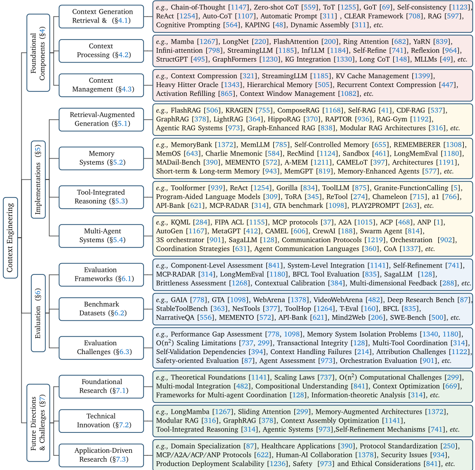
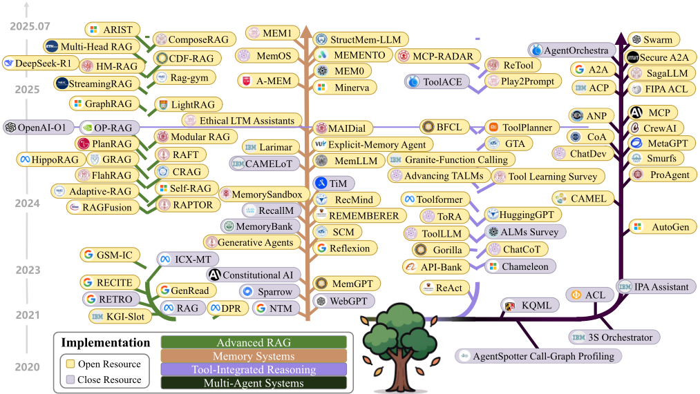
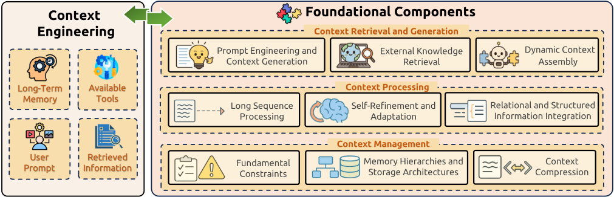
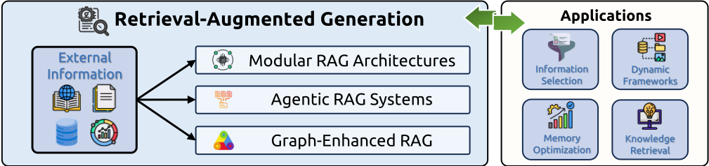
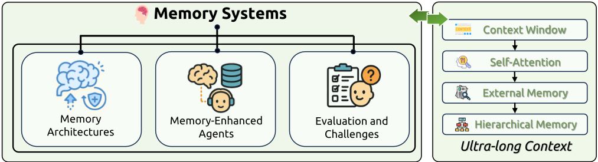
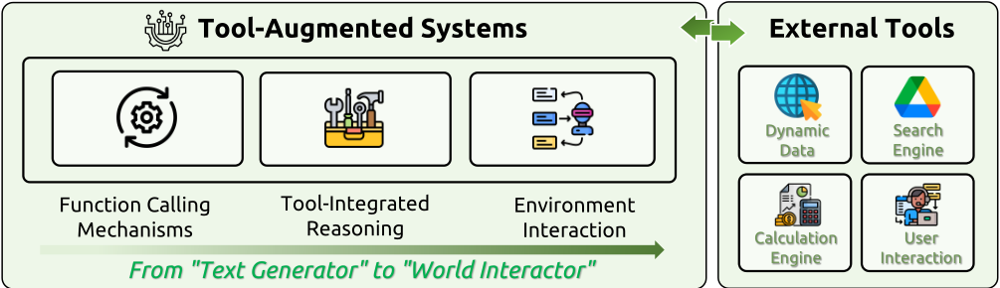
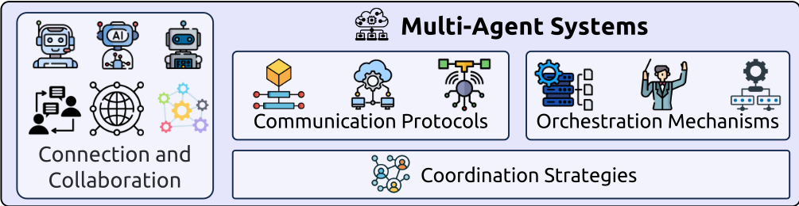

大语言模型上下文工程综述
该综述针对上下文相关技术（提示工程、RAG、记忆、工具调用、多智能体）各自孤立发展、缺乏统一框架的问题，基于 1400 余篇论文提出 Context Engineering 这一正式学科，将其组织为基础组件（Context Retrieval and Generation、Context Processing、Context Management）与系统实现（RAG、Memory Systems、Tool-Integrated Reasoning、Multi-Agent Systems）的两层分类法，并把上下文工程形式化为在长度约束下寻找最优上下文生成函数的优化问题。关键结论之一是当前模型在理解复杂上下文上表现优异，但生成同等复杂度长输出的能力明显不足（comprehension-generation gap），被列为未来研究优先方向。综述还系统梳理了组件级与系统级评测方法及 LongMemEval、GAIA、BFCL、ToolHop 等基准。对团队而言，它几乎完整覆盖全部五个能力域，可作为技术选型地图、评测基准索引与内部术语对齐的权威参考。
上下文相关技术（提示工程、RAG、记忆系统、工具使用、多智能体）呈爆炸式增长但研究碎片化，各领域被孤立研究，掩盖了技术间的本质联系，给研究者和工程实践者理解全局并有效利用这些方法造成障碍；同时 'prompt engineering' 一词已不足以涵盖现代 AI 系统中设计、管理和优化信息载荷的完整范围。论文旨在建立首个统一、系统的 Context Engineering 分类框架。
系统分析 1400+ 篇论文，提出两层分类法：基础组件层（Context Retrieval and Generation：提示生成与外部知识获取；Context Processing：长序列处理、自精炼、结构化信息整合；Context Management：记忆层级、压缩与优化）与系统实现层（Modular/Agentic/Graph-Enhanced RAG、Memory Systems、Tool-Integrated Reasoning、Multi-Agent Systems）。形式化定义：将上下文 C 建模为动态结构化组件集合并由组装函数 A 编排，把上下文工程表述为在 |C|≤L_max 约束下最大化输出质量的优化问题，并引入信息论最优检索（互信息最大化）与 Bayesian Context Inference 等理论框架；另系统梳理组件级/系统级评测方法论、代表性基准与未来研究方向。
覆盖并系统分析超过 1400 篇研究论文，建立 Context Engineering 统一分类法与技术路线图
Zero-shot CoT 将 MultiArith 准确率从 17.7% 提升至 78.7%；ToT 将 Game of 24 成功率从 4% 提至 74%；GoT 相比 ToT 质量提升 62%、成本降低 31%
GPT-4.1 在 AIME2024 上经结构化认知操作序列从 26.7% 提升至 43.3%；Self-Refine 使 GPT-4 获得约 20% 绝对性能提升；LM-BFF 自动提示优化在 NLP 任务上最高取得 30% 绝对改进
多智能体协作框架（analysts/coders/testers 角色分工）相比单 Agent 在 Pass@1 上相对提升 29.9-47.1%
ReTool 经 400 步训练在 AIME2024 达 67.0%，显著超过文本 RL 基线的 40.0%；GAIA 基准上人类 92% vs GPT-4 仅 15%；GTA 基准上 GPT-4 任务完成率不足 50%（人类 92%）
LongMemEval（500 题）显示商业 AI 助手在长交互中准确率下降达 30%；lost-in-the-middle 现象使长上下文中间位置信息相关性能下降最多 73%
效率与压缩：StreamingLLM 最高 22.2× 加速（支持 400 万 token 序列）、H2O 吞吐提升最高 29×、ICAE 实现 4× 上下文压缩、PREMISE 实现 87.5% token 减少、LongRoPE 将上下文扩展至 2048K token
区别于以往聚焦单一垂直领域（RAG、Agent、长上下文、提示工程等）的综述，本文首次将 Context Engineering 作为统一抽象，显式区分基础组件与系统实现，提供横向统一分类法，阐明 RAG（外部记忆）、工具使用（上下文获取）与提示工程（编排语言）之间的隐含关联；并将上下文工程形式化为可优化的数学问题（信息论最优检索、Bayesian 上下文推断）；首次系统指出理解-生成能力不对称（comprehension-generation gap）这一关键研究空白。
相关度级别：high
命中能力域：3.1 上下文工程与记忆 | 3.2 提示工程 | 3.3 Agent 架构与工具使用 | 3.4 多智能体协作 | 3.5 评测与可靠使用
理由：该综述与团队职责几乎一一对应：基础组件层（上下文检索与生成、处理、管理，含 RAG、记忆层级与压缩、长上下文策略）直接命中 3.1；提示技术、CoT/ToT/GoT、in-context learning 与 APE/Promptbreeder 自动提示优化命中 3.2；Tool-Integrated Reasoning 与 function calling（ReAct、ToolLLM、工具选择与执行流程）命中 3.3；Multi-Agent Systems 章节（MCP/A2A/ACP/ANP 通信协议、编排机制、协调策略）命中 3.4；第 6 节评测方法论与基准（LongMemEval、GAIA、BFCL、ToolHop、WebArena）及可靠性/安全/成本讨论命中 3.5。它是团队整个技术栈的全景地图，可用于技术选型、查漏补缺与术语对齐。
建议动作：深入精读并做内部分享
arXiv:2507.13334v2 [cs.CL] 2025年7月21日
大语言模型的上下文工程综述
摘要：大语言模型（Large Language Models, LLMs）的性能从根本上取决于推理过程中所提供的上下文信息。本综述提出了上下文工程（Context Engineering）这一正式学科，它超越了简单的提示设计，涵盖了对大语言模型信息负载的系统性优化。我们提出了一个全面的分类体系，将上下文工程分解为其基础组件（Components）以及将这些组件集成到智能系统中的复杂实现（Implementations）。我们首先考察基础组件：（1）上下文检索与生成（Context Retrieval and Generation），涵盖基于提示的生成与外部知识获取；（2）上下文处理（Context Processing），涉及长序列处理、自我精炼与结构化信息集成；（3）上下文管理（Context Management），包括记忆层次结构、压缩与优化。随后，我们探讨了这些组件如何在架构层面集成，以构建复杂的系统实现：（1）检索增强生成（Retrieval-Augmented Generation, RAG），包括模块化、智能体式与图增强架构；（2）记忆系统（Memory Systems），支持持久化交互；（3）工具集成推理（Tool-Integrated Reasoning），用于函数调用与环境交互；（4）多智能体系统（Multi-Agent Systems），协调通信与编排。通过对1400余篇研究论文的系统性分析，本综述不仅为该领域确立了技术路线图，还揭示了一个关键的研究空白：模型能力之间存在根本性的不对称。尽管当前模型在先进上下文工程的增强下，在理解复杂上下文方面展现出卓越的能力，但在生成同样复杂的长篇输出方面却表现出明显的局限。解决这一差距是未来研究的决定性优先事项。最终，本综述为推动上下文感知人工智能发展的研究人员与工程师提供了一个统一框架。
† 同时隶属于：（1）中国科学院计算技术研究所网络数据科学与技术重点实验室；（2）人工智能安全全国重点实验室
通讯作者 X
关键词：上下文工程、大语言模型、LLM Agent、多智能体系统
| 0 | 1 | 2 | 3 | 4 |
|---|---|---|---|---|
| 1 Introduction 4 | 1 Introduction 4 | 1 Introduction 4 | 1 Introduction 4 | |
| 2 | Related Work | Related Work | Related Work | 5 |
| 3 | Why Context Engineering? | Why Context Engineering? | Why Context Engineering? | 7 |
| 3.1 | Definition of Context Engineering . . . . . . . . . . . | . . . . . . . . . . . . . . . . . . . . . . | 8 | |
| 3.2 | Why Context Engineering . . . . . . . . . | . . . . . . . . . . . . . . . . . . . . . . . . . . . . | 11 | |
| 3.2.1 | . . . . . . | Current Limitations . . . . . . . . . . . . . . . . . . . . . . . . . . . . . . . | 11 | |
| 3.2.2 | Performance Enhancement . . | . . . . . . . . . . . . . . . . . . . . . . . . . . . . . . | 11 | |
| 3.2.3 | Resource Optimization . . . . . | . . . . . . . . . . . . . . . . . . . . . . . . . . . . . . | 11 | |
| 3.2.4 | Future Potential . . . . . . . . | . . . . . . . . . . . . . . . . . . . . . . . . . . . . . . | 12 | |
| 4 | Foundational Components | Foundational Components | Foundational Components | 12 |
| 4.1 | Context Retrieval and Generation . . . . . . . . . . | . . . . . . . . . . . . . . . . . . . . . . . | 12 | |
| 4.1.1 | Prompt Engineering and Context Generation . . . . . . . . . . . . . . . . . . . . . . . | 13 | ||
| 4.1.2 | External Knowledge Retrieval . . . . . . . . . . . . . . . . . . . . . . . . . . . . . . . | 14 | ||
| 4.1.3 | Dynamic Context | Assembly . . . . . . . . . . . . . . . . . . . . . . . . . . . . . . . . | 15 | |
| 4.2 | Context Processing . . . . . . . . . . . . . . . . . . . . . . . . . . . . . . . . . . . . . . . . . | Context Processing . . . . . . . . . . . . . . . . . . . . . . . . . . . . . . . . . . . . . . . . . | Context Processing . . . . . . . . . . . . . . . . . . . . . . . . . . . . . . . . . . . . . . . . . | 16 |
| 4.2.1 | Long Context . . . | Processing . . . . . . . . . . . . . . . . . . . . . . . . . . . . . . . | 16 | |
| 4.2.2 | Contextual Self-Refinement and | Adaptation . . . . . . . . . . . . . . . . . . . . . . . | 18 | |
| 4.2.3 | Multimodal Context . . . . . . | . . . . . . . . . . . . . . . . . . . . . . . . . . . . . . | 20 | |
| 4.2.4 | Relational and Structured | Context . . . . . . . . . . . . . . . . . . . . . . . . . . . . | 21 | |
| 4.3 | Context Management . . . . . . . . . . . . . . . . . . . . . . . . . . . . . . . . . . . . . . . . | Context Management . . . . . . . . . . . . . . . . . . . . . . . . . . . . . . . . . . . . . . . . | Context Management . . . . . . . . . . . . . . . . . . . . . . . . . . . . . . . . . . . . . . . . | 23 |
| 4.3.1 | Fundamental Constraints . . . | . . . . . . . . . . . . . . . . . . . . . . . . . . . . . . | 23 | |
| 4.3.2 | Memory Hierarchies and Storage Architectures | . . . . . . . . . . . . . . . . . . . . . | 24 | |
| 4.3.3 | Context . . . . . | Compression . . . . . . . . . . . . . . . . . . . . . . . . . . . . . . . | 25 | |
| 4.3.4 | Applications . . . . . . . . . . . | . . . . . . . . . . . . . . . . . . . . . . . . . . . . . . | 26 | |
| 5 | System Implementations | System Implementations | System Implementations | 27 |
| 5.1 Retrieval-Augmented Generation . . . . . . . . . . . . . . . . . . . . . . . . . . . . . . . . . | 5.1 Retrieval-Augmented Generation . . . . . . . . . . . . . . . . . . . . . . . . . . . . . . . . . | 5.1 Retrieval-Augmented Generation . . . . . . . . . . . . . . . . . . . . . . . . . . . . . . . . . | 27 | |
| 5.1.1 Modular RAG Architectures . . . . . . . . . . . . . . . . . . . . . . . . . . . . . . . . | 5.1.1 Modular RAG Architectures . . . . . . . . . . . . . . . . . . . . . . . . . . . . . . . . | 5.1.1 Modular RAG Architectures . . . . . . . . . . . . . . . . . . . . . . . . . . . . . . . . | 27 |
| 0 | 1 | 2 | 3 | 4 |
5.1.2
智能体式 RAG 系统 .
| 0 | 1 | 2 | 3 |
|---|---|---|---|
| 5.1.3 | Graph-Enhanced RAG . . . . . . . . . . . . . . . . . . | . . . . . . . . . . . . . . . . . 29 | |
| 5.1.4 | Applications . . . . . . . . . . . . . . . . . . . . . . . . | . . . . . . . . . . . . . . . . . 30 | |
| 5.2 | Memory Systems . | . . . . . . . . . . . . . . . . . . . . . . . . | . . . . . . . . . . . . . . . . . 31 |
| 5.2.1 | Memory Architectures . . . . . . . . . . . . . . . . . . | . . . . . . . . . . . . . . . . . 31 | |
| 5.2.2 | Memory-Enhanced Agents . . . . . . . . . . . . . . . . | . . . . . . . . . . . . . . . . . 33 | |
| 5.2.3 | Evaluation and Challenges . . . . . . . . . . . . . . . . | . . . . . . . . . . . . . . . . . 35 | |
| 5.3 | Tool-Integrated Reasoning | . . . . . . . . . . . . . . . . . . . . | . . . . . . . . . . . . . . . . . 37 |
| 5.3.1 | Function Calling Mechanisms . . . . . . . . . . . . . . | . . . . . . . . . . . . . . . . . 37 | |
| 5.3.2 | Tool-Integrated Reasoning . . . . . . . . . . . . . . . . | . . . . . . . . . . . . . . . . . 39 | |
| 5.3.3 | Agent-Environment Interaction . . . . . . . . . . . . . | . . . . . . . . . . . . . . . . . 40 | |
| 5.4 | Multi-Agent Systems . . | . . . . . . . . . . . . . . . . . . . . . | . . . . . . . . . . . . . . . . . 42 |
| 5.4.1 | Communication Protocols . . . . . . . . . . . . . . . . | . . . . . . . . . . . . . . . . . 42 | |
| 5.4.2 | Orchestration Mechanisms . . . . . . . . . . . . . . . . | . . . . . . . . . . . . . . . . . 43 | |
| 5.4.3 | Coordination Strategies . . . . . . . . . . . . . . . . . | . . . . . . . . . . . . . . . . . 44 | |
| 6 | Evaluation | Evaluation | 45 |
| 6.1 | Evaluation Frameworks and Methodologies | . . . . . . . . . . | . . . . . . . . . . . . . . . . . 45 |
| 6.1.1 | Component-Level Assessment . . . . . . . . . . . . . . | . . . . . . . . . . . . . . . . . 45 | |
| 6.1.2 | System-Level Integration Assessment . . . . . . . . . . | . . . . . . . . . . . . . . . . . 46 | |
| 6.2 | Benchmark Datasets and Evaluation Paradigms | . . . . . . . . | . . . . . . . . . . . . . . . . . 47 |
| 6.2.1 | Foundational Component Benchmarks . . . . . . . . . | . . . . . . . . . . . . . . . . . 47 | |
| 6.2.2 | System Implementation Benchmarks . . . . . . . . . . | . . . . . . . . . . . . . . . . . 47 | |
| 6.3 | Evaluation Challenges and Emerging Paradigms | . . . . . . . . | . . . . . . . . . . . . . . . . . 48 |
| 6.3.1 | Methodological Limitations and Biases . . . . . . . . . | . . . . . . . . . . . . . . . . . 49 | |
| 6.3.2 | Emerging Evaluation Paradigms . . . . . . . . . . . . . | . . . . . . . . . . . . . . . . . 49 | |
| 6.3.3 | Safety and Robustness Assessment . . . . . . . . . . . | . . . . . . . . . . . . . . . . . 50 | |
| 7 | Future Directions and Open Challenges | Future Directions and Open Challenges | 50 |
| 7.1 | Foundational Research Challenges . . | . . . . . . . . . . . . . . | . . . . . . . . . . . . . . . . . 51 |
| 7.1.1 | Theoretical Foundations and Unified Frameworks . . . | . . . . . . . . . . . . . . . . . 51 | |
| 7.1.2 | Scaling Laws and Computational Efficiency . . . . . . | . . . . . . . . . . . . . . . . . 51 |
| 0 | 1 | 2 | 3 |
3
7.1.3
多模态集成与表示
| 0 | 1 | 2 | 3 |
|---|---|---|---|
| 7.2 | Technical Innovation Opportunities . | . . . . . . . . . . . . . . . . . | . . . . . . . . . . . . . . 52 |
| 7.2.1 | Next-Generation Architectures . . . . . . . . . . . . . . . . . | . . . . . . . . . . . . . . 53 | |
| 7.2.2 | Advanced Reasoning and Planning . . . . . . . . . . . . . . | . . . . . . . . . . . . . . 53 | |
| 7.2.3 | Complex Context Organization and Solving Graph Problems | . . . . . . . . . . . . . . 54 | |
| 7.2.4 | Intelligent Context Assembly and Optimization . . . . . . . | . . . . . . . . . . . . . . 54 | |
| 7.3 | Application-Driven Research Directions . . | . . . . . . . . . . . . . . | . . . . . . . . . . . . . . 55 |
| 7.3.1 | Domain Specialization and Adaptation . . . . . . . . . . . . | . . . . . . . . . . . . . . 55 | |
| 7.3.2 | Large-Scale Multi-Agent Coordination . . . . . . . . . . . . | . . . . . . . . . . . . . . 55 | |
| 7.3.3 | Human-AI Collaboration and Integration . . . . . . . . . . . | . . . . . . . . . . . . . . 56 | |
| 7.4 | Deployment and Societal Impact Considerations . . . . . | . . . . . . | . . . . . . . . . . . . . . 56 |
| 7.4.1 | Scalability and Production Deployment . . . . . . . . . . . . | . . . . . . . . . . . . . . 56 | |
| 7.4.2 | Safety, Security, and Robustness . . . . . . . . . . . . . . . . | . . . . . . . . . . . . . . 57 | |
| 7.4.3 | Ethical Considerations and Responsible Development . . . . | . . . . . . . . . . . . . . 57 |
| 0 | 1 | 2 | 3 |
大语言模型（LLMs）的出现标志着人工智能领域的范式转变，其在自然语言理解、生成与推理方面展现出前所未有的能力 [103, 1067, 459]。然而，这些模型的性能与效力从根本上受其所接收上下文的支配。这一上下文——从简单的指令性提示到复杂的外部知识库——是引导其行为、扩充其知识并释放其能力的主要机制。随着 LLMs 从基本的指令遵循系统演化为复杂应用的核心推理引擎，设计与管理其信息载荷的方法也相应地发展为上下文工程（Context Engineering）这一正式学科 [25, 1265, 1068]。
上下文工程的研究版图正以爆炸式的速度扩张，催生了大量专业化却彼此割裂的研究领域。我们将这一版图概念化为由基础组件及其后续实现所构成。这些基础组件通过三个关键阶段构成了上下文工程的系统化流程：上下文检索与生成（Context Retrieval and Generation），涵盖基于提示的生成与外部知识获取 [25, 597, 48]；上下文处理（Context Processing），涉及长序列处理、自我精炼机制与结构化信息整合 [200, 741, 495]；以及上下文管理（Context Management），解决记忆层次结构、压缩技术与优化策略等问题 [1372, 1082, 819]。
这些基础组件是更为复杂的、面向应用的实现的构建模块，这些实现将 LLMs 与外部现实连接起来。这些系统包括：高级检索增强生成（Advanced RAG），其已演化为面向动态知识注入的模块化与智能体化架构 [597, 316, 973, 315]；模拟人类认知能力以实现信息持久保留的显式记忆系统（Memory Systems）[1191, 943, 1372]；以及智能体系统（Intelligent Agent Systems）的整个生态系统。后一类别代表了上下文工程的巅峰：Agent 借助函数调用（Function Calling）与工具集成推理（Tool-Integrated Reasoning）与世界交互 [939, 864, 669]，并依靠复杂的 Agent 通信（Agent Communication）协议与上下文编排（Context Orchestration）在多智能体配置中实现复杂目标 [360, 250, 902, 128]。
4
尽管上述每个领域都产生了大量创新，但它们大多被孤立地研究。这种碎片化的发展掩盖了各项技术之间的根本联系，并为寻求理解更宏观版图的研究人员以及旨在有效利用这些方法的实践者造成了重大障碍。该领域迫切需要一个统一的框架，以系统地组织这些多样化的技术，阐明其底层原理，并揭示它们之间的相互依赖关系。
为弥补这一关键空白，本综述首次对面向大语言模型（LLM）的上下文工程（Context Engineering）进行了全面而系统的回顾。我们的主要贡献是一种新颖的结构化分类体系（taxonomy），对用于设计、管理和优化上下文的多方面技术进行了分类。该分类体系将本领域组织为若干连贯的类别，区分了基础组件（Components）及其向复杂系统实现（System Implementations）的集成。通过这一框架，我们：（1）对各个领域的最新技术进展提供了清晰且结构化的概述；（2）分析了不同方法的核心机制、优势与局限性；（3）识别了总体性挑战，并为未来研究规划了有前景的方向。本工作既可作为在复杂的上下文工程领域中导航的技术路线图，也可作为促进更深入理解并催化未来创新的基础。
本文其余部分的组织结构如下。在讨论相关工作并正式定义上下文工程之后，我们首先考察本领域的基础组件（Foundational Components），涵盖上下文检索与生成、上下文处理和上下文管理。随后，我们探讨其系统实现（System Implementations），包括检索增强生成（RAG）、记忆系统、工具集成推理和多智能体系统。最后，我们讨论评估方法、未来研究方向，并对本综述进行总结。图1全面概述了我们的分类体系，展示了各项技术的层次化组织及其在上下文工程领域中的相互关系。
The rapid maturation of LLMs has spurred a significant body of survey literature aiming to map its multifaceted landscape. This existing work, while valuable, has largely focused on specific vertical domains within the broader field of what we define as Context Engineering. Our survey seeks to complement these efforts by providing a horizontal, unifying taxonomy that distinguishes between foundational components and their integration into complex systems, thereby bridging these specialized areas.
Foundational Components Numerous surveys have addressed the foundational Components of context engineering that form the core technical capabilities for effective context manipulation. The challenge of Context Retrieval and Generation encompasses both prompt engineering methodologies and external knowledge acquisition techniques. Surveys on prompt engineering have cataloged the vast array of techniques for guiding LLM behavior, from basic few-shot methods to advanced, structured reasoning frameworks [25, 257, 1322]. External knowledge retrieval and integration techniques, particularly through knowledge graphs and structured data sources, are reviewed in works that survey representation techniques, integration paradigms, and applications in enhancing the factual grounding of LLMs [489, 432, 823, 897].
5

The domain of Context Processing addresses the technical challenges of handling long sequences, self-refinement mechanisms, and structured information integration. Long context processing is addressed in surveys analyzing techniques for extending context windows, optimizing attention mechanisms, and managing memory efficiently [837, 651, 1298, 272]. The internal cognitive processes of LLMs are increasingly surveyed, with works on self-contextualizing techniques and self-improvement paradigms gaining prominence [1339, 231, 1176, 943].
6
Finally, Context Management literature focuses on memory hierarchies, compression techniques, and optimization strategies that enable effective information organization and retrieval within computational constraints. While comprehensive surveys specifically dedicated to context management as a unified domain remain limited, related work on memory systems and context compression techniques provides foundational insights into these critical capabilities.
System Implementation In parallel, the literature has extensively covered the System Implementations that integrate foundational components into sophisticated architectures addressing real-world application requirements. The domain of RAG has received substantial attention, with foundational surveys tracing its development and impact on mitigating hallucinations [315, 257, 1140]. More recent work has surveyed the evolution towards modular, agentic, and graph-enhanced RAG architectures [166, 628, 120, 316, 1401].
随着大语言模型（Large Language Models, LLMs）从简单的指令遵循系统演变为复杂、多方面应用的核心推理引擎，与之交互的方法也必须随之演进。“提示工程”（prompt engineering）这一术语虽然具有奠基性意义，但已不足以涵盖为现代 AI 系统设计、管理和优化所需信息载荷的全部范畴。这些系统并非运行在单一、静态的文本字符串之上；它们利用的是一种动态、结构化且多层面的信息流。为应对这一问题，我们提出并形式化了“上下文工程”（Context Engineering）这一学科。
7

为了正式定义上下文工程（Context Engineering），我们从自回归大语言模型（LLM）的标准概率模型出发。该模型以 θ 为参数，在给定输入上下文 C 的条件下，通过最大化条件概率来生成输出序列 Y = (y_1, ..., y_T)：
从历史上看，在提示工程的范式中，上下文 C 被视为一个整体式、静态的文本字符串，即 C = prompt。这种观点对于现代系统而言是不充分的。
上下文工程将上下文 C 重新概念化为一组动态结构化的信息组件 c_1, c_2, ..., c_n。这些组件由一组函数进行获取、过滤和格式化，最终由一个高层的组装函数 A 进行编排：
这些组件 c_i 并非任意选取；它们直接映射到本综述的核心技术领域：
8
上下文工程的优化问题。从这一视角出发，上下文工程是一个形式化的优化问题，即寻找一组理想的上下文生成函数（我们将其统称为 F = {A, Retrieve, Select, ...}），以最大化 LLM 输出的期望质量。给定任务分布 T，优化目标为：
其中 τ 是一个具体的任务实例，C_F(τ) 是 F 中的函数为该任务生成的上下文，Y*_τ 是真实值（ground-truth）或理想输出。该优化受到硬约束的制约，其中最显著的是模型的上下文长度限制，即 |C| ≤ L_max。
数学原理与理论框架。这一形式化揭示了更深层的数学原理。组装函数 A 是动态上下文编排（Dynamic Context Orchestration）的一种形式，即由格式化与拼接操作构成的流水线 A = Concat ◦ (Format_1, ..., Format_n)，其中每个函数都必须针对 LLM 的架构偏置（例如注意力模式）进行优化。
知识的检索 c_know = Retrieve(...) 可以被构建为一个信息论最优性（Information-Theoretic Optimality）问题。其目标是在给定查询 c_query 的条件下，选择与目标答案 Y* 之间互信息最大的知识：
这确保了检索到的上下文不仅在语义上相似，而且对解决任务具有最大的信息量。
此外，整个过程还可以通过贝叶斯上下文推断（Bayesian Context Inference）的视角来审视。我们不再以确定性的方式构建上下文，而是推断最优的上下文后验 P(C | c_query, History, World)。利用贝叶斯定理，该后验正比于在给定上下文的条件下查询的似然，以及上下文相关性的先验概率：
于是，决策论意义上的目标便是找到上下文 C*，使其在可能答案的分布上最大化期望奖励：
这一贝叶斯表述为处理不确定性、通过更新先验来执行自适应检索，以及在多步推理任务中维护关于上下文的信念状态，提供了一种有原则的方法。
9
| Dimension | Prompt Engineering | Context Engineering |
|---|---|---|
| Model | C = prompt (static string) | C = A ( c 1 , c 2 , . . . , c n ) (dynamic, structured assembly) |
| Target | argmax prompt P θ ( Y | prompt ) |
| Complexity | Manual or automated search over a string space. | System-level optimization of F = {A , Retrieve , Select , . . . } . |
| Information | Information content is fixed within the prompt. | Aims to maximize task-relevant information under constraint |
| State | Primarily stateless. | Inherently stateful, with explicit components for c mem and c state . |
| Scalability | Brittleness increases with length and complexity. | Manages complexity through modular composition. |
| Error Analysis | Manual inspection and iterative refinement. | Systematic evaluation and debugging of individual context functions. |
| Dimension | Prompt Engineering | Context Engineering |
范式对比 上下文工程的形式化凸显了其与传统提示工程的根本区别。下表总结了二者的关键差异。
总而言之，上下文工程为构建、理解和优化那些即将定义该领域未来的复杂上下文感知 AI 系统提供了所需的形式化、系统化框架。它将焦点从提示设计的“艺术”转向信息调度与系统优化的“科学”。
上下文扩展 上下文扩展涵盖两个基本维度，二者共同界定了上下文信息处理的范围与复杂程度。第一个维度是长度扩展，它应对的是处理超长序列在计算与架构方面的挑战，即将上下文窗口从数千个 token 扩展至数百万个 token，同时在长篇叙事、文档和交互中保持连贯的理解。这涉及精密的注意力机制、内存管理技术以及架构创新，使模型能够在极大扩展的输入序列上保持上下文连贯性。
第二个同样关键的维度是多模态与结构化扩展，它将上下文从简单文本拓展至涵盖多维、动态、跨模态的信息结构。这包括时间上下文（理解依赖于时间的关系与序列）、空间上下文（解释基于位置和几何的关系）、参与者状态（追踪多个实体及其不断演化的状态）、意图上下文（理解目标、动机与隐含目的），以及文化上下文（在特定的社会与文化框架内解读沟通）。
现代上下文工程必须同时应对这两个维度，因为现实世界的应用要求模型不仅能够处理冗长的文本信息，还要能够处理多样化的数据类型，包括结构化知识图谱、多模态输入（文本、图像、音频、视频）、时间序列，以及人类能够自然理解的隐含上下文线索。这种多维度的上下文扩展方法代表着一次根本性转变：从参数扩展转向开发能够理解复杂、模糊上下文的系统，而这些上下文正映照了人类智能在面对复杂世界时的细腻本质 [1044]。
10
大语言模型（LLM）面临着关键的技术障碍，因而需要精细的上下文工程方法。自注意力机制随着序列长度的增加会带来二次方量级的计算与内存开销，这为处理长上下文造成了巨大障碍，并显著影响着聊天机器人和代码理解模型等现实世界应用 [1025, 985]。商业部署进一步加剧了这些挑战，因为重复的上下文处理会引入额外的延迟以及基于 token 的计费成本 [1025]。
除计算方面的限制之外，LLM 还表现出令人担忧的可靠性问题，包括频繁出现的幻觉、对输入上下文的不忠实、对输入变化存在问题的敏感性，以及那些在句法上看似正确却缺乏语义深度或连贯性的回答 [959, 1288, 529]。
提示工程过程在方法论上存在挑战：其采用近似驱动且主观的方法，狭隘地聚焦于特定任务的优化，却忽视了单个 LLM 的行为 [806]。尽管存在这些挑战，提示工程对于有效利用 LLM 仍然至关重要，它通过精确且上下文丰富的提示来减少歧义并增强回答的一致性 [972]。
上下文工程通过检索增强生成（RAG）和叠加提示（superposition prompting）等技术带来了显著的性能提升，取得了有据可查的改进成果，包括文本导航准确率提升 18 倍、94% 的成功率，以及通过精心构建提示和跨专业领域自动优化所获得的显著收益 [271, 774, 687]。
结构化提示技术，尤其是思维链（CoT）方法，能够通过中间步骤实现复杂推理，同时增强了元素感知摘要（element-aware summarization）能力，将源文档中的细粒度细节整合进来 [1147, 756, 1129]。通过精心挑选的演示示例实现的少样本学习（few-shot learning）带来了可观的性能提升，包括代码摘要任务中 BLEU-4 分数提升 9.90%，以及缺陷修复任务中精确匹配指标提升 175.96% [310]。
面向特定领域的上下文工程在专业应用中被证明尤为有价值，执行感知调试框架在代码生成基准测试（benchmark）上取得了高达 9.8% 的性能提升，硬件设计应用则受益于专门的测试平台（testbench）生成与安全属性验证 [1370, 881, 44]。这些有针对性的方法弥合了通用模型训练与专业领域需求之间的差距。
上下文工程通过精心设计的提示实现智能内容过滤和直接知识传递，为资源密集型的传统方法提供了高效的替代方案 [636, 676]。即使相关信息已从输入上下文中删除，LLM 仍能借助上下文线索和先验知识生成预期响应，从而在保持响应质量的同时优化上下文长度的使用，这在数据获取面临重大挑战的领域中尤为宝贵 [636, 676]。
专门的优化技术进一步放大了效率收益，其途径包括：能显著降低 token 消耗的上下文感知与责任调优（responsibility tuning）、采用精确 token 级内容选择的动态上下文优化，以及面向长上下文推理的注意力引导机制 [430, 952, 354]。这些方法在降低处理开销并保持性能质量的同时，实现了信息密度的最大化 [952, 354]。
11
上下文工程通过上下文学习（in-context learning）实现了灵活的适应机制，使模型无需显式重新训练即可适应新任务，而上下文窗口的大小直接影响可用于任务适应的示例数量 [623]。先进技术集成了压缩与选择机制，以实现高效的模型编辑，同时保持上下文连贯性 [625]。这种适应性在低资源场景中尤为宝贵，使模型无需领域特定的微调即可有效利用各种提示工程技术，包括零样本方法、少样本示例和角色上下文 [932, 129, 1083]。
包括上下文学习、思维链（CoT）、思维树（tree-of-thought）和规划方法在内的精巧上下文工程技术，为细致的语言理解与生成能力奠定了基础，同时优化检索与生成过程，以支持稳健且具备上下文感知能力的 AI 应用 [803, 982]。
未来的研究方向表明，在推进上下文敏感应用方面具有巨大潜力，途径包括：采用 logit 对比机制的 CoT 增强 [961]、更好地跨领域利用不同类型的上下文，尤其是在结合语法、语义、执行流与文档的代码智能任务中 [1102]，以及理解最优的上下文利用策略——先进语言模型不断证明着提示工程的持久价值 [1087]。向精细的过滤与选择机制演进，代表了在保持性能质量的同时应对 Transformer 架构扩展性局限的关键路径。
上下文工程（Context Engineering）建立在三个基础组件之上，它们共同应对大语言模型中信息管理的核心挑战：上下文检索与生成（Context Retrieval and Generation）通过提示工程、外部知识检索和动态上下文组装来获取合适的上下文信息；上下文处理（Context Processing）通过长序列处理、自我精炼机制和结构化数据集成来转换并优化所获取的信息；上下文管理（Context Management）则通过应对基本约束、实现精巧的记忆层次结构以及开发压缩技术，来解决上下文信息的高效组织与利用问题。这些基础组件为所有上下文工程实现确立了理论与实践基础，构成了一个全面的框架：其中每个组件负责上下文工程流水线的不同方面，同时彼此保持协同关系，从而实现全面的上下文优化和有效的上下文工程策略。
上下文检索与生成（Context Retrieval and Generation）构成了上下文工程的基础层，涵盖为大型语言模型（LLM）系统性地检索与构建相关信息的过程。该组件通过三种主要机制应对获取恰当上下文信息这一关键挑战：基于提示的生成（prompt-based generation），用于精心构建有效的指令与推理框架；外部知识检索（external knowledge retrieval），用于访问动态信息源；以及动态上下文组装（dynamic context assembly），用于将所获取的组件编排为连贯且面向任务优化的上下文。
12

提示工程与上下文生成构成了上下文检索的基础层，涵盖融合艺术与科学的战略性输入设计，以期为 LLM 精心构建有效的指令。CLEAR 框架——简洁性（conciseness）、逻辑性（logic）、明确性（explicitness）、适应性（adaptability）与反思性（reflectiveness）——支配着有效的提示构建，而其核心架构则整合了任务指令、上下文信息、输入数据与输出指示器 [708, 1142, 575, 213, 25]。
零样本与少样本学习范式 零样本（zero-shot）提示无需先验示例即可实现任务执行，完全依赖指令的清晰性与预训练知识 [1371, 340, 559, 67, 1054]。少样本（few-shot）提示通过纳入有限的示例来引导模型响应，从而扩展了这一能力，并通过策略性的示例选择来示范任务执行 [1371, 405, 103, 552, 794, 1381]。上下文学习（in-context learning）通过利用提示中的演示示例，在无需参数更新的情况下促进对新任务的适应，其性能显著受到示例选择与排序策略的影响 [369, 103, 1296, 1024, 928, 852, 1148, 352, 582]。
思维链基础 思维链（Chain-of-Thought, CoT）提示将复杂问题分解为中间推理步骤，模拟人类认知 [1147, 405, 340, 947, 609]。零样本 CoT 使用诸如"Let's think step by step"之类的触发短语，将 MultiArith 的准确率从 17.7% 提升至 78.7% [559, 1107, 478, 668]，而 Automatic Prompt Engineer 的改进则带来了额外的增益 [1224, 532]。
思维树（Tree-of-Thoughts, ToT）将推理组织为具备探索、前瞻与回溯能力的层次结构，将 Game of 24 的成功率从 4% 提升至 74% [1255, 221, 563, 604]。思维图（Graph-of-Thoughts, GoT）将推理建模为任意图，其中思维作为顶点、依赖关系作为边，与 ToT 相比质量提升 62%、成本降低 31% [69, 832, 1376]。
13
认知架构集成 认知提示（cognitive prompting）实现了结构化的类人操作，包括目标澄清、分解、过滤、抽象与模式识别，并通过确定性、自适应与混合等变体实现系统化的多步骤任务求解 [564, 563, 1214, 1173]。Guilford 的智力结构模型（Structure of Intellect）为模式识别、记忆检索与评估等认知操作的分类提供了心理学基础，增强了推理的清晰性、连贯性与适应性 [562, 195]。先进的实现将认知工具（cognitive tools）作为模块化推理操作加以整合，通过结构化的认知操作序列，GPT-4.1 在 AIME2024 上的性能从 26.7% 提升至 43.3% [247, 1038]。
| Method | Description |
|---|---|
| Self-Refine [741, 924] | Enables LLMs to improve outputs through iterative feedback and refinement cycles using the same model as the generator, feedback provider, and refiner, without supervised training. |
| Multi-Aspect Feedback [805] | Integrates multiple feedback modules (frozen LMs and external tools), each focusing on specific error categories to enable more comprehensive, independent evaluation. |
| N-CRITICS [795] | Implements an ensemble of critics that evaluate an initial output. Compiled feedback from the generating LLM and other models guides refinement until a stopping criterion is met. |
| ISR-LLM [1383] | Improves LLM-based planning by translating natural language to formal specifications, creating an initial plan, and then systematically refining it with a validator. |
| SELF [710] | Teaches LLMs meta-skills (self-feedback, self-refinement) with limited examples, then has the model continuously self- evolve by generating and filtering its own training data. |
| ProMiSe [892] | Addresses self-refinement in smaller LMs using principle-guided iterative refinement, combining proxy metric thresholds with few-shot refinement and rejection sampling. |
| A2R [583] | Augments LLMs through Metric-based Iterative Feedback Learning, using explicit evaluation across multiple dimensions (e.g., correctness) to generate feedback and refine outputs. |
| Experience Refinement [863] | Enables LLM agents to refine experiences during task execution by learning from recent (successive) or all previous (cumulative) experiences, prioritizing high-quality ones. |
| I-SHEEP [660] | Allows LLMs to continuously self-align from scratch by generating, assessing, filtering, and training on high-quality synthetic datasets without external guidance. |
| CaP [1280] | Uses external tools to refine chain-of-thought (CoT) responses, addressing the limitation of models that get stuck in non-correcting reasoning loops. |
| Agent-R [1286] | Enables language agents to reflect 'on the fly' through iterative self-training, using Monte Carlo Tree Search (MCTS) to construct training data that corrects erroneous paths. |
| GenDiE [616] | Enhances context faithfulness with sentence-level optimization, combining generative and discriminative training to give LLMs self-generation and self-scoring capabilities. |
| Self-Developing [472] | Enables LLMs to autonomously discover, implement, and refine their own improvement algorithms by generating them as code, evaluating them, and using DPO to recursively improve. |
| SR-NLE [1130] | Improves the faithfulness of post-hoc natural language explanations via an iterative critique and refinement process using self-feedback and feature attribution. |
| Method | Description |
外部知识检索是上下文检索的关键组成部分，它通过对数据库、知识图谱和文档集合等外部信息源的动态访问，来应对参数化知识的根本局限性。
检索增强生成（RAG）基础 RAG 将存储在模型参数中的参数化知识与从外部源检索到的非参数化信息相结合，在保持参数效率的同时，实现对最新的、特定领域知识的访问 [597, 315, 257]。FlashRAG 为 RAG 系统提供了全面的评估与模块化实现，而 KRAGEN
14
和 ComposeRAG 等框架则展示了先进的检索策略，在多种基准测试（benchmark）上带来了显著的性能提升 [506, 755, 1168]。
Self-RAG 引入了自适应检索机制，由模型动态决定何时检索信息，并生成特殊标记来控制检索时机与质量评估 [41]。先进的实现包括用于层次化文档处理的 RAPTOR、受记忆启发的检索架构 HippoRAG，以及利用结构化知识表示来改进信息访问的 Graph-Enhanced RAG 系统 [936, 370, 364]。
知识图谱集成与结构化检索 知识图谱集成通过 KAPING 等框架来解决结构化信息检索问题，KAPING 基于语义相似度检索相关事实，并将其前置到提示中，而无需进行模型训练 [48, 679]。KARPA 通过预规划、语义匹配和关系路径推理提供免训练的知识图谱适配，在知识图谱问答任务上取得了最先进的性能 [262]。
Think-on-Graph 支持在知识图谱上进行顺序推理以定位相关三元组，在生成多条推理路径的同时进行探索，以从外部数据库检索相关信息 [1008, 726]。StructGPT 实现了迭代的“先阅读后推理”（reading-then-reasoning）方法，构建专门的函数以从结构化数据源中收集相关证据 [495]。
智能体化与模块化检索系统 Agentic RAG 系统将检索视为动态操作，其中 Agent 充当智能调查员，负责分析内容并交叉比对信息 [654, 166, 973]。这些系统融合了复杂的规划与反思机制，需要整合任务分解、多方案选择和迭代细化能力 [444, 1192]。
模块化 RAG 架构通过标准化接口和即插即用设计，实现检索组件的灵活组合。Graph-Enhanced RAG 系统利用结构化知识表示来改进信息访问，而 Real-time RAG 实现则应对流式应用中的动态信息需求 [316, 1401]。
Self-refine 通过自我批评与修订，在多次迭代中实现输出的迭代式改进，GPT-4 采用该方法取得了约 20% 的绝对性能提升 [741, 676]。多智能体协作框架模拟专业化团队的协作动态，由 Agent 承担不同角色（分析师、程序员、测试员），与单 Agent 方法相比，Pass@1 指标获得了 29.9-47.1% 的相对提升 [440, 1266]。
工具集成框架将思维链（Chain-of-Thought, CoT）推理与外部工具执行相结合，自动将中间推理步骤生成为可执行程序，并策略性地纳入外部数据。LangChain 为顺序处理链、Agent 开发以及网页浏览能力提供了全面的框架支持，而 Auto-GPT 和微软的 AutoGen 等专用框架则通过用户友好的界面助力复杂 AI Agent 的开发 [971, 1095, 25, 875]。
上下文处理（Context Processing）专注于对所获取的上下文信息进行转换与优化，以最大化其对大语言模型（LLM）的效用。该组件应对超长序列上下文处理中的挑战，支持迭代式的自我精炼与自适应机制，并促进将多模态、关系型和结构化信息整合为连贯的上下文表示。
自我精炼（self-refinement）使大语言模型（LLMs）能够通过模拟人类修订过程的循环反馈机制来改进输出，其利用通过提示工程实现的对话式自我交互来进行自我评估，这种方法有别于强化学习方法 [741, 924, 25, 1220]。
基础自我精炼框架 Self-Refine 框架使用同一个模型同时充当生成器、反馈提供者和精炼器，证明识别并修复错误通常比生成完美的初始解决方案更容易 [741, 1322, 231]。Reflexion 通过语言反馈将反思性文本保存在情景记忆缓冲区中，以供后续决策使用 [964]，而结构化指导被证明至关重要，因为过于简单的提示往往无法实现可靠的自我纠错 [678, 593]。
多方面反馈（Multi-Aspect Feedback）整合了冻结的语言模型与专注于特定错误类别的外部工具，以实现更全面、独立的评估 [805]。N-CRITICS 框架实现了基于集成（ensemble）的评估，由生成 LLMs 和其他模型共同评估初始输出，汇总后的反馈指导精炼过程，直至满足任务特定的停止准则 [795]。
A2R 框架采用跨多个维度（包括正确性与引用质量）的显式评估，为每个方面制定自然语言反馈，并迭代地精炼输出 [583]。ISR-LLM 通过将自然语言转换为形式化规范、创建初始计划，随后使用验证器对其进行系统性精炼，从而改进基于 LLM 的规划 [1383]。
元学习与自主演化 SELF 以有限的示例教会 LLMs 元技能（自我反馈、自我精炼），随后让模型通过生成并过滤自身的训练数据来持续自我演化 [710]。自我奖励（self-rewarding）机制使模型能够通过迭代式自我评判实现自主改进，其中单一模型承担执行者与评判者的双重角色，并最大化其分配给自己的奖励 [1172, 1287]。
18
Creator 框架扩展了这一范式，使 LLMs 能够通过一个涵盖创建、决策、执行和识别的四模块流程来创建并使用自己的工具 [954, 862]。Self-Developing 框架代表了最自主的方法，使 LLMs 能够通过将算法候选生成为可执行代码的迭代循环，来发现、实现并精炼其自身的改进算法 [472]。
上下文学习（in-context learning）从根本上代表了一种元学习形式：模型在预训练期间学习可跨多样任务泛化的优化策略，从而在推理时能够快速适应新挑战 [183, 1174]。元上下文学习（Meta-in-context learning）证明了上下文学习能力可以通过上下文学习本身递归地得到改进，自适应地重塑模型对预期任务的先验，并修改上下文学习策略 [181]。
记忆增强自适应框架 记忆增强代表了一种实现元学习的强大途径，代表性框架如 Memory of Amortized Contexts，其利用特征提取与记忆增强，将来自新文档的信息压缩为存储在记忆库中的紧凑调制 [1019]。Context-aware Meta-learned Loss Scaling 通过元训练小型自回归模型，在在线微调过程中为每个 token 动态重新加权语言建模损失，从而应对知识过时的挑战 [436]。
Decision-Pretrained Transformers 展示了如何训练 transformer 执行上下文强化学习（in-context reinforcement learning, RL），通过泛化到预训练分布之外来解决先前未见过的 RL 问题 [1021, 588]。基于上下文的元强化学习方法通过对上下文编码器的直接监督来提升性能，与端到端训练方法相比提高了样本效率 [1080]。
长思维链与高级推理 长思维链（Long Chain-of-Thought, LongCoT）已成为一项重要演进，其特征是显著更长的推理轨迹，能够对问题进行深入探索，OpenAI-o1、DeepSeek-R1、QwQ 和 Gemini 2.0 Flash Thinking 等先进模型均实现了这一范式 [148, 724, 1223]。LongCoT 的有效性似乎与上下文窗口容量相关，实证证据表明，更大的上下文窗口往往带来更强的推理性能 [1238]。
扩展推理使自我反思与纠错机制成为可能，让模型能够在解决问题的过程中识别并改正错误 [1344]。增加推理步骤长度——即便不添加新信息——也能通过测试时扩展（test-time scaling）在多个数据集上显著增强推理能力 [1355]。
优化策略针对冗长推理轨迹导致的计算低效问题，提出了多种方案：通过 best-of-N 采样自生成更短的推理路径、包括 ZeroThinking 与 Less-Thinking 方法在内的自适应推理模式，以及在保持推理质量的同时减少 token 使用量的显式紧凑 CoT 方法 [797, 1358, 703]。Auto Long-Short Reasoning 能够根据问题复杂度动态调整推理路径长度，帮助模型判断何时需要更长的思维链 [721]。
19
多模态大语言模型（MLLMs）通过将包括视觉、音频和 3D 环境在内的多种数据模态整合到统一的上下文表示中，将上下文工程扩展到了文本之外。这一扩展在模态融合、跨模态推理和长上下文处理方面带来了新的挑战，同时也使能够利用丰富多模态上下文理解的复杂应用成为可能。
基础技术 多模态大语言模型（MLLMs）通过整合来自视觉、音频和 3D 环境等多种模态的数据，在传统大语言模型（LLMs）的基础上进行了扩展 [105, 49, 965]。一种主要的整合方法是将视觉输入转换为离散 token 并与文本 token 拼接，使 LLM 的生成过程以组合表示为条件 [1295]。这一过程通常借助视觉提示生成器（Visual Prompt Generators, VPGs）来实现，其在图像-描述对上进行训练，将视觉特征映射到 LLM 的嵌入空间中 [613]。主流的架构范式通过 Q-Former 等对齐模块或简单的多层感知机（MLP），将专门的外部多模态编码器——例如用于视觉的 CLIP 或用于音频的 CLAP——连接到 LLM 主干网络 [19, 86, 615, 1139]，这种模块化设计允许在无需重新训练整个模型的情况下独立更新编码器 [624]。
高级整合策略 更为复杂的方法能够实现更深层次的模态融合。跨模态注意力机制直接在 LLM 的嵌入空间内学习文本 token 与视觉 token 之间的细粒度依赖关系，从而增强图像编辑等任务的语义理解能力 [570, 909, 102]。为了处理冗长输入，分层设计分阶段处理各模态以确保可扩展性 [158]，而“浏览-聚焦”（browse-and-concentrate）范式则在 LLM 摄入之前融合多幅图像的上下文，以克服孤立处理的局限性 [1143]。一些研究绕过了对纯文本 LLM 的适配，转而采用统一的训练范式，从一开始就在多模态数据和文本语料库上联合预训练模型，以缓解对齐方面的挑战 [1391, 1233]。其他方法则将文本用作通用语义空间，利用 LLM 的上下文学习（in-context learning）来提升在多样化模态组合上的泛化能力 [1058]。对于视频，上下文整合技术涵盖从提示调优（prompt tuning）到基于适配器（adapter）的方法，后者将视频内容转换为序列以进行推理 [1088]。这些模型的开发往往受限于对海量高质量多模态数据以及大量计算资源的需求 [1304, 615, 215]。
模态偏差与推理缺陷 多模态大语言模型（MLLM）发展的一个主要障碍是模态偏差，即模型偏向文本输入，依赖习得的语言模式而非整合后的视觉或听觉信息，从而生成看似合理却缺乏多模态依据的回答 [1368, 24, 319, 1335]。训练方法加剧了这一问题；例如，在简单的图像描述任务上训练的 VPG 学会仅提取用于生成描述的显著特征，而忽略了对更复杂的基于指令的任务至关重要的其他视觉细节，这从根本上限制了深层次的多模态理解 [613, 510]。因此，MLLM 常常难以完成细粒度的空间或时间推理，例如精确的目标定位或理解视频中详细的事件序列 [1039, 965]，在社交媒体等复杂领域中尤为明显，因为在这些领域中，解读文本与图像之间的相互作用以理解错误信息或讽刺言论十分困难 [511]。有效的多模态推理不仅需要理解每种模态本身，还需要推断它们组合后的整体含义 [389]。使这些问题更加复杂的是，我们对 MLLM 本身机制的理解仍然有限；其内部运作在很大程度上是一个黑箱，这阻碍了更优架构的开发 [1283]。
20
上下文学习与长上下文学习 MLLM 的一个关键能力是上下文学习（in-context learning），即模型无需进行权重更新，便能从提示中的多模态示例适应新任务 [1407, 1408, 557]。链接上下文学习（LCL）通过提供具有显式因果链接的示例来增强这一能力，从而提升泛化能力 [1020]。然而，上下文学习受限于固定的上下文窗口，因为图像 token 会占用大量空间，从而限制了多样本学习 [443]。性能还对输入顺序敏感，且每种模态的相对重要性因任务而异 [1028, 1206]。处理长多模态上下文（这对视频分析等应用至关重要）仍然是一个主要的研究前沿 [1094]。相关创新包括面向视频的自适应分层 token 压缩 [1128]、可变视觉位置编码（V2PE）[1391]、诸如面向对话记忆的 ContextQFormer 等专用模块 [595]，以及面向视频的动态、查询感知的帧选择 [587]。MLLM 还在长时间交互中表现出涌现的通信效率，这一现象仍在研究之中 [442]。
新兴应用 处理丰富多模态上下文的能力正在解锁新的应用。MLLM 被用于预测性推理，例如从视觉场景中预测人类活动 [1392]，并在各种多模态基准测试（benchmark）中展现出令人印象深刻的感知与认知能力 [294]。在视觉问答（VQA）中，上下文被用于获得更精确的答案，例如通过提示 MLLM 自行生成关于图像的描述性文本上下文 [1356]，或通过检索增强生成（RAG）整合外部知识 [1001, 105]。其他应用包括基于感官输入规划数字动作 [611]、通过记忆增强的上下文理解来增强手术决策支持 [422]，以及通过将视觉信息与语音和音频线索相整合来实现细致入微的视频理解 [648, 1202, 7]。研究人员还将 MLLM 扩展到了触觉信息、事件数据和图结构等新兴模态 [1368, 1031, 1222]。这些真实世界用例的日益重要，推动了用于评估上下文理解能力的综合评估框架的发展 [1118]。这些进展使得以往纯文本模型无法实现的应用成为可能，例如图像描述生成（image captioning）和复杂的多模态推理 [1182, 683, 139]。
大型语言模型（LLM）由于基于文本的输入要求和顺序架构的局限，在处理表格、数据库和知识图谱等关系型与结构化数据时面临根本性约束 [495, 47, 1145]。线性化往往无法保留复杂的关系和结构特性，当信息分散于整个上下文中时，性能会随之下降 [592, 591, 946]。
知识图谱嵌入与神经集成 先进的编码策略通过知识图谱嵌入来应对结构上的局限，这类嵌入将实体和关系转换为数值向量，从而能够在语言模型架构内实现高效处理 [12, 1259, 938, 1203]。图神经网络（GNN）捕捉实体之间的复杂关系，并通过 GraphFormers 等专门架构（将 GNN 组件与 transformer 块嵌套结合）促进跨知识图谱结构的多跳推理 [982, 408, 1230, 489]。
21
GraphToken 通过显式表示结构信息展现了显著的改进，借助参数高效的编码函数，在图推理任务上取得了高达 73 个百分点的提升 [842]。Heterformer 及其他混合式 GNN-LM 架构在统一模型中执行上下文化文本编码与异构结构编码，解决了扩展这些集成系统所带来的计算挑战 [502, 471, 757]。
| Method | Approach | Performance | Key Innovation |
|---|---|---|---|
| ODA [1009] | Observation-driven agent framework | 12.87% and 8.9% improvements | Recursive observation with action-reflection |
| RAG-KG [1215] | Historical issue KG construction | 77.6% MRR, 0.32 BLEU improvement | Query parsing and sub-graph retrieval |
| KARPA [262] | Training-free KG adaptation | State-of-the-art KGQA performance | Pre-planning relation paths |
| Faithful Reasoning [726] | Planning-retrieval-reasoning framework | N/A | LLM-KG synergy with relation paths |
| Method | Approach | Performance | Key Innovation |
语言化与结构化数据表示 语言化技术将包括知识图谱三元组、表格行和数据库记录在内的结构化数据转换为自然语言句子，无需修改架构即可与现有语言系统无缝集成 [12, 788, 1072, 13]。多层次结构化方法基于语言关系将输入文本重组为分层结构，而结构化数据表示方法则利用现有 LLM 提取结构化信息，并将关键要素表示为图、表或关系模式 [687, 1134, 1334, 1043, 608]。
结构化数据的编程语言表示，特别是用于知识图谱的 Python 实现和用于数据库的 SQL，通过利用固有的结构特性，在复杂推理任务中优于传统的自然语言表示 [1175]。采用结构化矩阵表示的资源高效方法，为在保持结构化数据任务性能的同时减少参数量提供了有前景的方向 [347]。
集成框架与协同方法 知识图谱与语言模型的集成遵循几种不同的范式，其特征在于不同的实现策略和性能权衡 [823, 1149]。K-BERT 等预训练集成方法在训练过程中注入知识图谱三元组以内化事实知识，而推理时方法则能够在无需完整模型重新训练的情况下实现实时知识访问 [696, 1246, 718]。
知识图谱（KG）增强的大语言模型（LLM）通过 KAPING 等基于检索的增强方法引入结构化知识，以改善事实锚定；该方法基于语义相似度检索相关事实并将其前置到提示中，而无需进行模型训练 [48, 679, 597]。更为复杂的实现则通过适配器模块和交叉注意力机制将 KG 派生的表示直接嵌入到模型潜在空间中，并由 Text2Graph 映射器提供输入文本与 KG 嵌入空间之间的链接 [132, 1074, 432]。
协同方法构建了两种技术发挥同等重要作用的统一系统，通过由数据和知识驱动的双向推理来应对根本性局限 [823, 859, 1120]。GreaseLM 促进了跨所有模型层的深度交互，使语言上下文表示能够被结构化世界知识所锚定，同时语言中的细微差别也为图表示提供信息 [1330]。QA-GNN 实现了双向注意力机制，通过联合图构建以及经由基于图的消息传递实现的相互表示更新，将问答上下文与知识图谱连接起来 [1259, 982]。
22
应用与性能增强 结构化数据集成在多个维度上显著增强了 LLM 的能力，知识图谱所提供的结构化信息通过将回答锚定在可验证的事实上来减少幻觉，并通过明确定义的信息来源提高事实准确性 [1010, 1352, 204, 571]。知识图谱通过提供结构化的实体关系来增强推理能力，使复杂的多跳推理和逻辑推断成为可能，其丰富的层次化知识储备显著提升了推断的精确性与可靠性 [1175, 212, 1026]。
实际应用在各个专业领域展现了显著的改进。医疗健康系统通过检索增强生成（Retrieval-Augmented Generation, RAG）框架将结构化医学知识与上下文理解相结合，以改进疾病进展建模和临床决策 [848, 589]。科学研究平台将研究发现组织为结构化知识，以支持假设生成和研究空白识别，而商业分析系统则在基于规则的精确性与 AI 模式识别之间取得平衡，从而获得更具可操作性的洞察 [1336, 1070]。
问答系统受益于面向结构化数据源的自然语言接口，两者的集成创建了更鲁棒的系统，能够处理多模态查询并提供个性化响应，从而克服静态知识库的局限性 [1326, 1125, 922, 1215]。研究表明，与非结构化记忆方法相比，结构化知识表示可在公开数据集上将摘要生成性能分别提升 40% 和 14%，而 Chain-of-Key 策略通过动态结构化记忆更新带来了额外的性能增益 [465]。
| Method | Data Type | Integration Method | Key Innovation | Task Scope |
|---|---|---|---|---|
| K-LAMP [48] | Knowledge graphs | Retrieval-based augmentation | KAPING framework | Zero-shot QA |
| Pan et al. [823] | Knowledge graphs | Pre-training & inference integration | Synergized LLMs + KGs | Multi-domain reasoning |
| StructLM [1402] | Tables, graphs, databases | Instruction tuning | 1.1M example dataset | 18 datasets, 8 SKG tasks |
| Shao et al. [946] | Tables, databases, KGs | Linearization methods | Schema linking & syntax prediction | Text-to-SQL tasks |
| Method | Data Type | Integration Method | Key Innovation | Task Scope |
上下文管理（Context Management）解决的是大语言模型（LLM）内部上下文信息的高效组织、存储与利用问题。该组件应对有限上下文窗口所带来的根本性约束，构建精密的记忆层次结构与存储架构，并实施压缩技术，以在保持可访问性与连贯性的同时最大化信息密度。
大语言模型（LLM）在上下文管理方面面临根本性约束，其根源在于大多数架构固有的有限上下文窗口尺寸——这显著降低了模型在需要深度理解长篇文档的任务上的效能，同时带来巨大的计算需求，阻碍了需要快速响应和高吞吐量的应用 [1082]。尽管扩展上下文窗口能使模型处理完整文档并捕获更长距离的依赖关系，但传统 Transformer 架构的计算复杂度会随序列长度的增加呈二次方增长，使得处理极长文本的代价高昂到令人望而却步 [1007]。尽管 LongNet 等创新方法已将这种复杂度降低至线性，但如何在窗口大小与泛化能力之间取得平衡仍具挑战性 [1007, 220]。
23
实证证据揭示了“迷失在中间”（lost-in-the-middle）现象，即 LLM 难以获取位于长上下文中部区段的信息，而当相关信息出现在输入的开头或结尾时，模型的表现会显著更好 [128, 691, 654]。这种位置偏差严重影响扩展思维链（chain-of-thought, CoT）推理任务的性能——在此类任务中，关键的早期结果容易遭受遗忘，与没有先前上下文时的性能相比，性能急剧下降，降幅高达 73% [128, 1147, 381]。
LLM 天生便独立处理每一次交互，既缺乏在连续交换之间维持状态的原生机制，也缺乏稳健的自验证机制，这些约束源于哥德尔不完备定理（Gödel's incompleteness theorems）所揭示的根本性限制 [128, 372]。这种根本性的无状态特性使得显式的管理系统成为必需，以维持连贯的操作序列并确保稳健的故障恢复机制 [128]。上下文管理面临两种相互对立的挑战：其一是上下文窗口溢出（context window overflow），即模型因超出窗口限制而“遗忘”先前上下文；其二是上下文坍塌（context collapse），即扩大的上下文窗口或对话记忆导致模型无法区分不同的对话上下文 [993]。研究表明，思维链提示所宣称的收益并非源于真正的算法学习，而是依赖于针对特定问题的提示，且随着问题复杂度的增加，这些收益会逐渐衰减 [992]。长上下文处理的计算开销在管理键值缓存（key-value cache）方面带来了额外挑战——键值缓存随输入长度大幅增长，在延迟和准确性两方面形成瓶颈；与此同时，多轮与纵向交互的挑战进一步加剧了上下文管理的复杂性，因为有限的有效上下文阻碍了纵向知识积累，而多示例（many-shot）提示对 token 的需求既压缩了系统和用户输入的可用空间，又拖慢了推理速度 [919, 725, 393]。
上下文压缩技术通过在保留关键信息的同时降低计算与内存负担，使大语言模型（LLM）能够高效地处理更长的上下文。基于自编码器的压缩通过上下文自编码器（In-context Autoencoder, ICAE）实现了显著的上下文缩减，该方法将长上下文压缩为 LLM 可直接以其为条件的紧凑记忆槽（memory slots），从而实现 4 倍的上下文压缩，在推理过程中以更优的延迟和内存占用显著增强了模型处理扩展上下文的能力 [321]。循环上下文压缩（Recurrent Context Compression, RCC）在受限的存储空间内高效地扩展上下文窗口长度，通过实现指令重构技术，解决了指令与上下文同时被压缩时模型响应不佳的难题 [447]。
记忆增强方法通过基于 k 近邻（kNN）的记忆缓存来增强上下文管理，这类缓存存储历史输入的键值对以供后续查找，并通过基于检索的机制提升语言建模能力 [397]。对比学习方法提升了记忆检索的准确性；侧网络（side networks）无需对 LLM 进行微调即可解决记忆陈旧问题；表示整合方法则动态更新过去的 token 表示，使上下文窗口能够任意大而不受固定记忆槽的限制 [397]。
分层缓存系统实现了精细的多层方案。激活回填（Activation Refilling, ACRE）采用双层 KV 缓存（Bi-layer KV Cache），其中 layer-1 缓存以紧凑方式捕获全局信息，layer-2 缓存提供详细的局部信息，并利用来自 L2 缓存的与查询相关的条目动态回填 L1 缓存，从而将宏观理解与具体细节相融合 [865]。Infinite-LLM 通过 DistAttention 将注意力计算分布到 GPU 集群、通过 liability 机制在实例间借用内存，并通过全局规划进行协调，从而解决动态上下文长度管理问题 [943]。KCache 通过将 K Cache 存储在高带宽内存中、同时将 V Cache 保留在 CPU 内存中，并基于注意力计算选择性地复制关键信息，从而优化推理 [943]。
多智能体分布式处理代表了一种新兴方法，它利用基于 LLM 的多智能体方法以分布式方式处理海量输入，解决了在处理大量外部知识时知识同步与推理过程中的核心瓶颈 [705]。对真实场景中键值缓存访问模式的分析揭示了在检索增强生成（RAG）和智能体等工作负载中缓存的高可复用性，凸显了对具备优化元数据管理的高效分布式缓存系统的需求，以减少冗余并提升速度 [1399]。这些压缩技术可以与其他长上下文建模方法相结合，在降低计算开销并保持信息完整性的同时，进一步增强 LLM 高效处理和利用扩展上下文的能力 [321]。
25
| Method | Strategy | Efficiency | Accuracy | Length Mgmt | Scalability |
|---|---|---|---|---|---|
| O1-Pruner [724] | RL fine-tuning | N/A | +Acc, -Overhead | Auto pruning | +Efficiency |
| InftyThink [1223] | Iterative + summarization | Complexity reduction | +3-13% | Iterative control | Scalable |
| Long-CoT Survey [148] | Long CoT + reasoning | +Efficiency frameworks | +Complex domains | Deep exploration | Test-time scaling |
| PREMISE [1282] | Prompt opt + diagnostics | Gradient-inspired opt | Maintained/+Acc | -87.5% tokens | Performance maintained |
| Prune-on-Logic [727] | Structure-aware pruning | Selective pruning | +Accuracy | Selective framework | Logic-based opt |
| Method | Strategy | Efficiency | Accuracy | Length Mgmt | Scalability |
有效的上下文管理将大语言模型（LLM）的能力从简单的问答扩展到更复杂的层面，使其能够利用跨多个领域的全面上下文理解来支持复杂的应用。文档处理与分析能力使 LLM 能够处理整篇文档或理解完整的文章而非片段，从而通过对输入材料的全面理解给出与上下文相关的响应；这对于基因序列、法律文档和技术文献等本质上较长的序列数据尤为宝贵，因为在这类内容中保持大范围内容的连贯性至关重要 [1007]。
由上下文管理技术所促成的扩展推理能力，支持需要在长序列中维护中间结果并在此基础上继续构建的复杂推理。通过捕获长程依赖关系，这些系统支持多步问题求解——其中后续推理依赖于先前的计算或推导——从而在需要广泛上下文感知的领域中实现复杂应用，例如复杂决策支持系统和科学研究辅助 [1007, 164]。
在多轮对话或顺序任务中，协作式系统和多智能体（multi-agent）系统受益于有效的上下文管理，因为在这类场景中，维护一致的状态并在协作模型之间同步内部信息至关重要 [157]。这些能力支持包括分布式任务处理、协作内容创作和多智能体问题求解在内的应用，在这些应用中必须跨多次交互保持上下文的连贯性 [157]。
增强的对话式界面利用健壮的上下文管理来无缝处理冗长的对话而不丢失对话线索的连贯性，从而实现更自然、更持久且与人类对话高度相似的交互 [891]。面向任务的 LLM 系统受益于结构化的上下文管理方法：滑动窗口存储实现了最简的上下文管理系统，将提示和响应永久地追加到上下文存储中；而检索增强生成（RAG）系统则通过为 LLM 提供对外部动态信息源的访问来对其进行补充 [216, 934]。这些能力支持诸如个性化虚拟助手、长期辅导系统和治疗性对话智能体等应用，它们能够在长时间交互中保持连续性 [891]。
记忆增强应用实现了使大语言模型（LLM）能够持久存储、管理并动态检索相关上下文信息的策略，从而支持需要随时间积累知识的应用，其途径包括：通过持续交互构建个性化用户模型、在长期交互中实施有效的知识管理，以及支持依赖历史上下文的长期规划场景 [164]。诸如情境感知智能记忆（Contextually-Aware Intelligent Memory, CAIM）等先进记忆框架通过融入认知AI原理来增强长期交互，其模块支持用户特定信息的存储与检索，同时支持基于上下文和基于时间的相关性过滤 [1152]。面向LLM Agent的记忆管理融入了与人类记忆再巩固（memory reconsolidation）类似的过程，包括去重、合并和冲突解决，其中 Reflective Memory Management 等方法将前瞻性反思与回顾性反思相结合，以实现动态摘要与检索优化 [1176, 386]。基于案例的推理（case-based reasoning）系统为LLM Agent记忆提供了理论基础，其架构组件支持认知集成，其持久上下文存储技术则通过实现缓存策略来更快地提供必要的上下文 [387, 385]。这些收益不仅限于处理更长的文本，还通过更佳的理解能力、更相关的回复以及在长期交互中更强的连续性，从根本上提升了LLM的交互质量，显著扩展了LLM的效用，并解决了受限上下文窗口所带来的局限 [891]。
26
在上下文工程基础组件的基础上，本节考察将这些组件集成到实用智能架构中的复杂系统实现。这些实现代表了从理论框架到运用上下文工程原则的可部署系统的演进。我们介绍系统实现的四大主要类别。检索增强生成（RAG）系统通过模块化架构和图增强方法展示了外部知识集成。记忆系统通过支持长期学习的精巧记忆架构展示了持久上下文管理。工具集成推理（Tool-Integrated Reasoning）通过函数调用和环境交互将语言模型转变为世界交互者。多智能体系统通过通信协议和编排机制呈现了协调式方法。每种实现都构建于基础组件之上，同时解决上下文利用中的特定挑战，展示了理论原则如何转化为实用系统。
检索增强生成（RAG）通过将外部知识源与语言模型生成相集成，弥合了参数化知识与动态信息访问之间的鸿沟。这一实现使模型能够通过模块化架构、智能体框架和图增强方法访问最新的、特定领域的信息，从而突破静态训练数据的局限。
模块化RAG（Modular RAG）从线性的检索-生成架构转向具备灵活组件交互能力的可重构框架 [315, 1140, 597]。与朴素RAG（Naive RAG）和高级RAG（Advanced RAG）的查询重写不同，模块化RAG引入了分层架构：顶层的RAG阶段、中间层的子模块以及底层的操作单元 [316, 736]。这种架构通过路由、调度和融合机制突破了线性结构，实现动态重构 [316]。
其形式化表示 RAG = R, G 通过精巧的模块组合方式运作，支持 Rewrite-Retrieve-Read 模型与 Generate-Read 方法，并融合了自适应搜索模块、用于多查询处理的 RAGFusion、用于最优数据源选择的路由模块，以及兼顾检索准确率与上下文相关性的混合检索策略 [315, 497, 916, 1053, 888, 95]。
27

当代框架在检索准确率与可信度方面展现出显著提升 [1382]。FlashRAG 提供了一个包含 5 个核心模块和 16 个子组件的模块化工具包，支持独立调整与流水线组合 [506]。KRAGEN 通过将知识图谱与向量数据库相集成来增强生物医学问题求解能力，利用针对生物医学知识图谱优化的提示生成来应对复杂推理中的幻觉问题 [401, 755, 981]。ComposeRAG 为问题分解（Question Decomposition）与查询重写（Query Rewriting）实现了原子模块，并引入自我反思机制以进行迭代优化 [1168]。这种模块化特性促进了与微调和强化学习的集成，能够针对特定应用进行定制，并提供支持多样化自然语言处理（NLP）任务的综合性工具包 [316, 920, 4]。
Agentic RAG 将自主 AI Agent 嵌入 RAG 流水线，从而实现由持续推理引导的动态、上下文敏感的操作 [973, 281]。这些系统利用反思、规划、工具调用与多智能体协作来动态管理检索策略，并使工作流适应复杂的任务需求 [973]。RAG 与 Agent 工作流通过对应语义理解的查询重写实现对齐，而检索阶段则对应规划与执行 [628]。
基于 LLM 的自主 Agent 通过多模态感知、工具利用和外部记忆集成来扩展基础语言模型的能力 [1169, 1099, 939, 849]。外部长期记忆充当知识数据存储，使 Agent 能够在较长的时间跨度内整合并访问信息 [1169, 386]。与静态方法不同，Agentic RAG 将检索视为一种动态操作，其中 Agent 充当智能调查者，负责分析内容并交叉核对信息 [654, 166]。
实现范式涵盖无需额外训练的基于提示的方法，以及通过强化学习优化模型以实现策略性工具调用的基于训练的方法 [654, 1327, 973]。先进的系统使 LLM Agent 能够在单一工作流内查询向量数据库、访问 SQL 数据库或使用 API，而方法学进展则聚焦于推理能力、工具集成、记忆机制以及面向自主决策的指令微调 [709, 6]。
核心能力包括借助任务分解、多计划选择和记忆增强规划策略实现的推理与规划组件，使 Agent 能够分解复杂任务并选择合适的策略 [444, 445]。PlanRAG 通过先规划后检索（plan-then-retrieve）的方法改进决策，使 Agent 能够评估多个信息源并优化检索策略，而 SLA 管理框架则应对可重构的多智能体架构 [166, 467]。工具利用使系统能够使用包括搜索引擎、计算器和 API 在内的多种资源，ReAct 和 Reflexion 等框架例证了将推理与行动交错进行如何增强适应性 [166, 1169, 964]。记忆机制提供外部长期存储，而自适应检索策略则支持对复杂性与上下文的自主分析 [166, 1137]。
自我反思与自适应机制使 Agentic RAG 系统能够在动态环境中运行，通过迭代反馈循环根据先前的交互结果对操作进行改进 [1192, 692]。诸如 MemoryBank 等先进的记忆系统实现了受艾宾浩斯遗忘曲线（Ebbinghaus Forgetting Curve）启发的更新机制，增强了 Agent 从过往交互中检索并应用所学知识的能力 [1372, 169]。CDF-RAG 采用闭环流程，将因果图检索与强化学习驱动的查询细化及幻觉纠正相结合 [537]。Self-RAG 训练模型按需检索段落，同时对检索与生成过程进行反思，并利用反思标记（reflection tokens）在推理过程中控制行为 [243, 41]。
基于图的检索增强生成（RAG）从面向文档的方法转向能够捕获实体关系、领域层次结构和语义连接的结构化知识表示 [120, 1363, 364, 1401]。这使得系统能够提取特定的推理路径，为语言模型提供相关信息，同时通过结构化路径导航支持多跳推理 [120]。图结构通过利用互连性实现增强的上下文感知检索和逻辑连贯性，从而将上下文漂移和幻觉降至最低 [518, 812]。
知识图谱作为基础表示，以结构化格式封装实体及其相互关系，从而支持高效查询和语义关系捕获 [166, 1066]。基于图的知识表示可分为：以图作为知识载体的知识型 GraphRAG（knowledge-based GraphRAG）、以图作为索引工具的索引型 GraphRAG（index-based GraphRAG），以及结合两种方法的混合 GraphRAG（hybrid GraphRAG）[1208]。成熟的实现包括 GraphRAG 结合社区检测的分层索引、PIKE 将文档组织为三层层次结构的多级异构知识图谱，以及 EMG-RAG 的可编辑记忆图（Editable Memory Graph）架构 [317]。
图神经网络（Graph Neural Networks, GNN）通过解决在处理结构化知识方面的局限性来增强 RAG 系统，其中 GNN 擅长捕获实体关联并提升知识一致性 [232, 116]。GNNRAG 实现采用轻量级架构以实现有效的知识图谱元素检索，在与语言模型对接之前改进图结构捕获 [1380, 166]。集成过程涵盖通过节点和边提取进行图构建、基于查询的检索，以及融合所检索信息的生成 [1380]。
多跳推理能力使基于图的系统能够跨多个相互连接的知识图谱节点综合信息，从而支持需要整合互相关联事实的复杂查询求解 [1066, 170]。这些系统采用结构化表示，以非结构化文本无法实现的方式捕获实体间的语义关系和领域层次结构 [1066, 170]。诸如 Hierarchical Lexical Graph 之类的先进框架在保留语句溯源信息（statement provenance）的同时，对主题进行聚类以实现灵活检索，并链接实体以支持基于图的遍历 [333]。GraphRAG、LightRAG 及其衍生系统实现了双层检索、分层索引和图增强策略，从而支持稳健的多级推理 [1183, 317]。
29
突出的架构展示了图增强检索的多样化实现方式，其优化策略在检索有效性方面带来了显著提升 [106]。LightRAG 通过双层检索范式将图结构与向量表示相融合，提升了效率与内容质量 [416, 723]。HippoRAG 在知识图谱上利用个性化 PageRank（Personalized PageRank），在多跳问答中取得了显著改进 [1096, 752, 370]。HyperGraphRAG 提出超图结构化表示，超越了二元关系的局限 [723]。RAPTOR 为递归式上下文生成提供了层次化摘要树的构建方法，而 PathRAG 则为基于图的检索引入了剪枝技术 [1359, 936, 134]。这些结构化方法借助显式的实体连接实现了透明的推理路径，在克服传统 RAG 挑战的同时，降低了噪声并增强了语义理解 [1183, 518]。
实时 RAG 系统旨在应对生产环境中的关键挑战，在这类环境中，动态知识库需要持续更新和低延迟响应 [1349, 534]。核心挑战包括高效部署与处理流水线优化，而现有框架缺乏即插即用的解决方案，因而需要进行系统级优化 [1349]。流式数据的集成带来了额外的复杂性，因为传统架构在信息频繁变化时表现出较差的准确性，且随着文档数量的增长效率不断下降 [520]。
动态检索机制相较于静态方法更进一步，它在生成过程中持续更新策略，并基于生成状态和已识别的知识缺口实时调整目标与语义向量空间 [388]。当前在确定最优检索时机与查询构建方面的局限性，可通过思维链（Chain-of-Thought, CoT）推理、迭代检索过程、分解式提示以及用于动态检索的 LLM 生成内容加以解决，从而实现自适应的信息选择；相关方法还扩展至自适应控制机制，通过反思标签提升生成质量 [1000, 536, 85, 539, 1248]。
低延迟检索方法利用基于图的方法，在速度-精度优化方面展现出显著前景，其中稠密段落检索（dense passage retrieval）技术提供了基础性的改进 [525]。LightRAG 的双层检索系统在将图结构与向量表示相集成以实现高效实体关系检索的同时，增强了信息发现能力，并在保持相关性的同时缩短了响应时间 [364]。多阶段检索流水线通过基于图的重排序等技术优化计算效率，在降低存储需求的同时实现对最新信息的动态访问 [982]。
可扩展性解决方案采用分布式处理架构，结合高效的数据分区、查询优化与容错机制，以适应不断变化的流式条件 [1048, 35]。通过变换型 heavy hitters 流式算法进行内存优化，能够在保持质量的同时智能过滤无关文档，这对频繁变化的内容尤为有价值 [520]。生产级框架通过模块化 RAG 架构展现出效率提升，这类架构支持查询扩展等检索前流程以及压缩与选择等检索后精炼，从而实现对各个组件的精细调优 [1077]。
增量索引与动态知识更新确保系统能够适应新信息而无需完整重训练，这在网络安全和气候金融应用等快速演变的领域中尤为关键 [836, 1064]。现代框架融入了动态知识检索方法，能够基于不断演变的输入与上下文信息持续调整策略，在增强交互性与语义理解的同时，提升了跨领域集成的适用性 [388]。先进的基于 Agent 的方法展示了在复杂环境中精密的任务分配能力，例如需要实时决策的协同无人机（UAV）操作，其应用还延伸至面向具身 Agent 的接地规划 [1324, 983]。诸如 DRAGON-AI 等动态检索增强生成框架展示了面向本体生成的专门实现，将文本组件与逻辑组件相结合，同时引入自记忆机制以实现迭代改进 [1051]。这些进展代表着在动态环境中将实时知识与灵活检索能力无缝集成的重要演进。
30
记忆系统通过实现持久化的信息存储、检索与利用机制，使大语言模型（LLM）能够超越无状态交互。这一实现将模型从模式匹配处理器转变为能够在扩展交互过程中实现学习、适应与长期上下文理解的复杂 Agent。

Memory distinguishes sophisticated language systems from pattern-matching models, enabling information processing, storage, and utilization across natural language tasks [1191, 1176, 300]. LLMs face considerable memory system constraints despite breakthroughs in text generation and multi-turn conversations [1191]. Neural memory mechanisms struggle with inadequate structured information storage and reliance on approximate vector similarity calculations rather than precise symbolic operations, challenging accurate storage and retrieval for multi-hop reasoning [427]. These limitations represent critical challenges for developing AI systems operating effectively in complex real-world applications [550].
Memory Classification Frameworks LLM memory systems can be organized into multiple classification frameworks. The primary temporal classification divides memory into three categories: sensory memory (input prompts), short-term memory (immediate context processing), and long-term memory (external databases or dedicated structures) [943]. From a persistence perspective, short-term memory includes keyvalue caches and hidden states existing only within single sessions, while long-term memory encompasses text-based storage and knowledge embedded in model parameters, persisting across multiple interaction cycles [943, 824].
31
Implementation-based classifications identify parametric memory (knowledge encoded in model weights), ephemeral activation memory (context-limited runtime states), and plaintext memory accessed through Retrieval-Augmented Generation methods [643]. Current implementations lack sophisticated lifecycle management and multi-modal integration, limiting long-term knowledge evolution. Feed-forward network layers serve as key-value tables storing memory, functioning as 'inner lexicon' for word retrieval and creating mechanisms analogous to human associative memory [524, 329, 330, 770, 470]. These classification schemes reflect attempts to develop LLM memory architectures paralleling human cognitive systems [1176].
Short-Term Memory Mechanisms Short-term memory in LLMs operates through the context window, serving as working memory maintaining immediate access to previously processed tokens [1291]. This functionality is implemented through key-value caches storing token representations but disappearing when sessions terminate [899]. Architectural variations demonstrate significant differences: transformer-based models implement working memory systems flexibly retrieving individual token representations across arbitrary delays, while LSTM architectures maintain coarser, rapidly-decaying semantic representations weighted toward earliest items [40].
Modern LLM short-term memory frequently manifests as in-context learning, reflecting models' ability to acquire and process information temporarily within context windows [1189, 103]. This enables fewshot learning and task adaptation without parameter updates. Research identifies three primary memory configurations: full memory (utilizing entire context history), limited memory (using context subsets), and memory-less operation (without historical context) [1052]. Despite advances expanding context windows to millions of tokens, LLMs struggle with effective reasoning over extended contexts, particularly when relevant information appears in middle positions [899, 691].
Long-Term Memory Implementations LLMs face significant challenges maintaining long-term memory due to context window limitations and catastrophic forgetting [114]. External memory-based methods address these limitations by utilizing physical storage to cache historical information, allowing relevant history retrieval without maintaining all information within constrained context windows [688, 1372]. These approaches contrast with internal memory-based methods focusing on reducing self-attention computational costs to expand sequence length [688, 291].
Long-term memory implementations categorize into knowledge-organization methods (structuring memory into interconnected semantic networks), retrieval mechanism-oriented approaches (integrating semantic retrieval with forgetting curve mechanisms), and architecture-driven methods (implementing hierarchical structures with explicit read-write operations) [521, 1372, 450]. Memory storage representations can be further divided into token-level memory (information stored as structured text for direct retrieval) and latentspace memory (utilizing high-dimensional vectors for abstract and compact information representation) [1225, 1133]. Advanced approaches incorporate psychological principles, with MemoryBank implementing Ebbinghaus Forgetting Curve theory for selective memory preservation based on temporal factors [1372], emotion-aware frameworks employing Mood-Dependent Memory theory [450], and memorization mechanisms balancing performance advantages with privacy concerns through extraction vulnerability analysis [1049, 122, 123].
Memory Access Patterns and Structures LLMs exhibit characteristic memory access patterns with notable similarities to human cognitive processes, demonstrating clear primacy and recency effects when recalling information lists [483]. Memory retrieval operates through sequential access (retrieving content in consecutive order) and random access (accessing information from arbitrary points without processing preceding content) [1397]. Memory persistence studies employ recognition experiments, recall experiments, and retention experiments to quantify information accessibility duration and retrieval conditions [816], with cognitive psychology concepts like semantic and episodic memory integration improving LLM information synthesis capabilities [244].
32
Memory organization encompasses diverse structural approaches including textual-form storage (complete and recent agent-environment interactions, retrieved historical interactions, external knowledge), knowledge representation structures (chunks, knowledge triples, atomic facts, summaries, mixed approaches), hierarchical systems with library-enhanced reasoning components, and functional patterns organized by tasks, temporal relevance, or semantic relationships [1339, 1299, 1035]. Core memory operations include encoding (transforming textual information into latent space embeddings), retrieval (accessing relevant information based on semantic relevance, importance, and recency), reflection (extracting higher-level insights), summarization (condensing texts while highlighting critical points), utilization (integrating memory components for unified outputs), forgetting (selective information discarding), truncation (formatting within token limitations), and judgment (assessing information importance for storage prioritization) [1341]. These structures offer varying trade-offs between comprehensiveness, retrieval efficiency, and computational requirements.
记忆系统从根本上将大语言模型（LLM）从无状态的模式处理器转变为能够在长期交互中实现持续学习与适应的复杂智能体 [1268]。记忆增强型智能体同时利用短期记忆（便于实时响应与即时上下文感知）和长期记忆（支持在较长时间跨度内进行更深入的理解与知识应用），以适应不断变化的环境、从经验中学习，并做出需要持久信息访问的明智决策 [1268]。
智能体架构集成 当代LLM智能体采用的记忆系统类似于计算机的存储器层次结构，其中短期记忆充当上下文窗口内用于上下文理解的主存储器，而长期记忆则作为用于长期信息保留的持久存储器 [776]。从面向对象的角度来看，AI系统会生成与个体用户相关的个人记忆以及包含中间任务结果的系统记忆 [1176]。MemOS等结构化框架将记忆划分为参数化记忆（Parametric Memory，编码于模型权重中的知识）、激活记忆（Activation Memory）和明文记忆（Plaintext Memory），其中参数化记忆代表嵌入在前馈层和注意力层中的长期知识，从而支持零样本生成 [643]。
记忆集成框架不断演进，通过精巧的架构来应对LLM的局限性。自控制记忆（Self-Controlled Memory, SCM）框架通过基于LLM的智能体主干、记忆流以及负责管理更新与使用的记忆控制器来增强长期记忆 [655]。REMEMBERER框架为LLM配备经验记忆，利用跨任务目标的过往情节，通过语言强化和自我反思反馈机制，实现无需参数微调的成功/失败学习 [1308]。MemLLM等先进系统实现了结构化的读写记忆模块，以应对记忆罕见事件、更新信息以及防止幻觉等挑战 [785]。利用LLM的自主智能体依赖四个核心组件——感知、记忆、规划和行动——它们协同工作，以实现环境感知、交互回忆以及实时规划与执行 [620, 38]。
33
| Model. | Textual.Complete | Textual.Recent | Textual.Form Retrieved | Textual.External | Parametric Form.Fine-tuning | Parametric Form.Editing |
|---|---|---|---|---|---|---|
| Core Memory Systems | Core Memory Systems | Core Memory Systems | Core Memory Systems | Core Memory Systems | Core Memory Systems | Core Memory Systems |
| MemoryBank [1373] | × | × | ✓ | × | × | × |
| RET-LLM [784] | × | × | ✓ | × | × | × |
| ChatDB [427] | × | × | ✓ | × | × | × |
| TiM [689] | × | × | ✓ | × | × | × |
| Voyager [1086] | × | × | ✓ | × | × | × |
| MemGPT [820] | × | ✓ | ✓ | × | × | × |
| RecMind [1124] | ✓ | × | × | × | × | × |
| Retroformer [1258] | ✓ | × | × | ✓ | ✓ | × |
| ExpeL [1347] | ✓ | × | ✓ | ✓ | × | × |
| Synapse [1367] | × | × | ✓ | × | × | × |
| Agent-Based Systems | Agent-Based Systems | Agent-Based Systems | Agent-Based Systems | Agent-Based Systems | Agent-Based Systems | Agent-Based Systems |
| ChatDev [861] | ✓ | × | × | × | × | × |
| InteRecAgent [456] | × | ✓ | ✓ | ✓ | × | × |
| TPTU [917, 560] | ✓ | × | × | ✓ | × | × |
| MetaGPT [413] | ✓ | × | × | × | × | × |
| S 3 [305] | × | × | ✓ | × | × | × |
| Mem0 [173] | × | × | ✓ | × | × | × |
| Advanced Memory Architectures | Advanced Memory Architectures | Advanced Memory Architectures | Advanced Memory Architectures | Advanced Memory Architectures | Advanced Memory Architectures | Advanced Memory Architectures |
| Larimar [202] | × | ✓ | ✓ | × | × | ✓ |
| EM-LLM [290] | × | ✓ | ✓ | × | × | × |
| Controllable Working Memory [603] | ✓ | ✓ | ✓ | × | ✓ | × |
| Working Memory Hub [359] | ✓ | ✓ | ✓ | ✓ | × | × |
| Recent and Emerging Systems | Recent and Emerging Systems | Recent and Emerging Systems | Recent and Emerging Systems | Recent and Emerging Systems | Recent and Emerging Systems | Recent and Emerging Systems |
| LLM-based Opinion Dynamics [179] | × | × | ✓ | × | × | × |
| Memory Sandbox [462] | × | × | ✓ | × | × | ✓ |
| A-MEM [1212] | × | × | ✓ | × | × | ✓ |
| MemEngine [1341] | × | × | ✓ | ✓ | × | × |
| HIAGENT [433] | × | ✓ | ✓ | × | × | × |
| MemInsight [925] | × | × | ✓ | ✓ | × | × |
| Memory Sharing (MS) [306] | × | × | ✓ | ✓ | × | × |
| MemoRAG [866] | ✓ | × | ✓ | ✓ | ✓ | × |
| Echo [700] | ✓ | ✓ | ✓ | ✓ | ✓ | × |
| Model. | Textual.Complete | Textual.Recent | Textual.Form Retrieved | Textual.External | Parametric Form.Fine-tuning | Parametric Form.Editing |
实际应用 记忆增强的 LLM 智能体已在多种应用领域展现出变革性影响。在对话式 AI 中，记忆系统通过回忆过往经验和用户偏好来提供个性化、上下文感知的响应，从而实现更自然、更接近人类的交互。商业实现包括 Charlie Mnemonic（基于 GPT-4 结合长期记忆、短期记忆和情景记忆）、Google Gemini（利用长期记忆在 Google 生态系统中提供个性化体验）以及 ChatGPT Memory（跨会话记住对话内容）[584]。用户模拟应用采用由 LLM 驱动、模仿人类行为的对话式智能体，以经济高效的方式进行对话系统评估，并能灵活适应开放域对话、任务导向交互和对话式推荐等场景 [208]；诸如 Memory Sandbox 之类的系统则支持用户通过数据对象操作来控制对话记忆 [461]。
34
任务导向型智能体利用记忆在最少人工干预的情况下执行复杂的自主操作，将 LLM 用作控制器，并通过多模态感知、工具调用和外部记忆对其进行扩展 [1169]。其应用涵盖推荐系统（RecMind 通过规划和外部知识提供个性化推荐，InteRecAgent 将 LLM 与作为工具的推荐模型相结合）、自动驾驶（DiLu 通过推理、反思和记忆灌输类人知识）、科学研究（ChemCrow 实现化学合成设计与执行的自动化）以及社会模拟（生成式智能体通过记忆存储与综合展现出可信的行为）[1027, 653, 92, 831]。主动式对话智能体应对策略性对话场景中的挑战，此类场景需要面向目标的对话引导，可通过基于提示的策略规划方法以及基于对话历史的 AI 反馈生成来实现 [208, 207]。
个性化助手应用利用记忆与用户保持连贯的长期关系，记忆组件充当结构化存储库，存储与上下文相关的信息，包括用户偏好和历史交互 [444]。面向特定领域的实现包括：采用记忆协调来处理医疗交互的医疗健康助手 [1325, 1316]、利用外部知识库的推荐智能体 [1325, 1302]、通过基于记忆的进度跟踪提供上下文感知支持的教育智能体 [653]，以及 MARK 等通过用户偏好记忆增强个性化 AI 助手的专用框架 [303]。
记忆技术与集成方法 记忆技术的演进通过检索增强生成（RAG）来应对上下文窗口的根本性局限，RAG 利用预训练 seq2seq 模型和稠密向量索引，将参数化记忆与非参数化记忆相结合以进行语言生成 [1218, 597]。这种方法无需重新训练即可访问参数存储之外的信息，显著扩展了知识能力。包括向量数据库和 RAG 在内的高级记忆机制能够实现海量信息存储并快速访问相关数据，同时融合了短期上下文记忆与长期外部存储 [38, 371, 1193, 513]。
非参数化方法在保持大语言模型（LLM）参数冻结的同时，利用 RAG 等外部资源来丰富任务上下文 [942]。Reflexion 等系统通过情景记忆缓冲区中的自我反思反馈实现语言强化，而 REMEMBERER 则引入持久化经验记忆，使其能够从过去的成功与失败中学习。MemoryBank 等先进架构通过整合先前的交互信息，实现了记忆检索、基于更新的持续演化以及个性适应 [1211, 1372]。
专用记忆架构通过精细的组织与检索机制来满足特定的智能体需求。早期系统需要预定义的存储结构和检索时机，而 Mem0 等较新的系统则遵循 RAG 原则引入图数据库，以实现更有效的记忆组织和基于相关性的检索 [1211]。包括 OpenAI ChatGPT Memory、Apple Personal Context、mem0 和 MemoryScope 在内的商业与开源实现表明，记忆系统已被广泛采用以增强个性化能力 [1176]。工具增强范式在利用世界交互工具的同时，验证了其在复杂任务分解中的有效性；记忆增强智能体已成为现代 AI 系统的核心，这些系统通过以自然语言集成规划、工具调用、记忆与多步推理来执行复杂任务 [251, 360, 1099, 34]。
记忆评估框架已成为系统性地跨多个维度评估大语言模型（LLM）智能体能力的关键组成部分，反映了记忆在智能系统中的多面性。
35
这些综合性评估方法在揭示重大挑战的同时，也指出了有望释放记忆增强智能体新能力的富有前景的研究方向。
评估框架与指标 当代的记忆评估采用专门的指标，这些指标超越了传统的自然语言处理（NLP）性能指标，以捕捉记忆功能的细微方面 [1340]。有效性指标通过准确性度量（基于历史消息的回答正确性）和 recall@5 指标（在前 5 个结果中检索到相关消息的百分比）来关注事实信息的存储与利用。效率指标通过响应时间（信息检索与利用所耗费的时长）和适应时间（存储新信息所需的周期）来考察时间方面的特性 [1340]。
诸如 LongMemEval 等大规模基准测试（benchmark）通过 500 个精心筛选的问题评估五项基本的长期记忆能力：信息提取、时序推理、多会话推理、知识更新以及弃答，结果表明商业助手在长时间交互过程中准确率下降达 30%，同时自动化记忆评估框架支持进行超越 passkey 检索方法的全面评估 [1180]。专用框架借助评估特定时间情境下经历的基准测试来针对情景记忆，研究表明，包括 GPT-4、Claude 各变体以及 Llama 3.1 在内的前沿模型，即使在相对较短的上下文中，也难以应对涉及相互关联事件或复杂时空关联的情景记忆挑战 [463]。当代的 LLM 基准测试主要集中于评估模型对事实信息和语义关系的记忆保持能力，却在很大程度上忽视了情景记忆评估——即结合时间与空间发生细节对记忆进行情境化的能力 [847]。
任务特定评估涵盖长上下文段落检索（在扩展上下文中定位特定段落）、长上下文摘要（形成全面理解以生成简洁摘要）、NarrativeQA（基于长篇叙事回答问题），以及诸如 MADail-Bench 等专门基准测试——该基准测试评估对话情境中的被动与主动记忆回忆，并纳入记忆注入、情感支持能力与亲密度评估等新颖维度 [1339, 1390, 556, 390]。其他任务特定框架包括用于会议摘要的 QMSum、用于阅读理解的 QuALITY、面向需要时空记忆的对话式问答（QA）的 DialSim，以及用于个性化具身智能体评估的 MEMENTO——后者采用两阶段流程来评估物理环境任务中的记忆利用 [1390, 572]。
当前局限与挑战 记忆评估面临诸多重大挑战，限制了对能力的有效评估。根本性局限包括缺乏用于评估记忆性能的一致且严谨的方法，尤其是在超出训练数据的泛化方面 [288]。缺乏专门为长期记忆评估设计的标准化基准测试构成了另一大显著障碍，现有框架往往无法捕捉类人智能所需的记忆能力全谱系 [1079]。
架构约束显著增加了评估工作的复杂性，因为大多数当代基于 LLM 的智能体以根本上的无状态方式运行，将各次交互独立处理，未能真正随时间增量积累知识 [1365, 1364]，尽管借助能够实现灵活记忆表示控制的注意标记机制，工作记忆方面已取得进展 [870]。这一局限阻碍了对真正终身学习的评估——终身学习是人类水平智能的基石，涉及在多样情境和较长时间跨度内持续进行知识获取、保留与复用。
36
当需要将记忆特定性能与其他智能方面隔离开来时，便会产生方法论问题，使得难以判定失败究竟源于记忆机制不足还是推理能力局限 [288]。真实世界应用中的动态记忆使用带来了评估挑战，因为受控实验室测试不足以捕捉信息相关性不可预测变化的复杂场景中记忆系统的性能 [1079]。
优化策略与未来研究方向 记忆优化涵盖多种技术，旨在提升利用率，同时最小化计算开销并最大化效率。受生物启发的遗忘机制提供了有效的优化途径，例如 MemoryBank 等框架实现了艾宾浩斯遗忘曲线，依据时间因素与重要性选择性地保留和丢弃信息 [1372]。基于反思的优化通过 Reflexion 等系统实现，借助集成评估与自我反思进行性能评估，创建出通过持续学习不断改进记忆与行为的双重反馈系统 [304]。
分层记忆结构通过支持高效检索的多层级格式优化信息组织，其例证包括：配备快速记忆访问模块的 Experience-based Hierarchical Control 框架 [868]、通过双向快慢变量交互实现的记忆巩固过程 [63]，以及根据查询相关性对记忆进行动态排序的 Adaptive Cross-Attention Networks [410]。
未来研究方向涵盖：结合参数化精确性与非参数化高效性的混合记忆框架 [942]、用于可扩展响应评估的自动化反馈机制 [893]、通过共享外部记忆实现协作学习的多智能体记忆系统 [306]、结合知识图谱的增强元数据学习 [896, 386]、面向专门应用的领域特定记忆架构 [507]、在非活动期间纳入记忆巩固的认知启发式优化 [758]，以及通过 Low-Rank Adaptation 等技术实现参数高效记忆更新以完成高效知识整合 [428, 256]。这些进展有望推动记忆增强的 LLM 智能体迈向复杂精细、类人的认知能力，同时应对计算与架构方面的局限；其应用可扩展至长期机器人规划、现实世界决策系统，以及通过流式学习场景与持续反馈集成实现的协作式 AI 助手 [1159, 1346, 1278]。
工具集成推理（Tool-Integrated Reasoning）将语言模型从被动的文本生成器转变为能够动态利用工具并操纵环境的主动世界交互者。这一实现使模型能够通过函数调用机制、集成推理框架以及复杂精细的环境交互能力，超越其固有限制。
Function calling transforms LLMs from generative models into interactive agents through structured output generation leveraging functions' abstraction mechanism, enabling external tool manipulation and access to current, domain-specific information for complex problem-solving [5, 669, 335, 882, 58, 523, 1113].
Evolution began with Toolformer's self-supervised approach demonstrating autonomous API learning, inspiring ReAct's 'thought-action-observation' cycle, progressing through specialized models like Gorilla and comprehensive frameworks including ToolLLM, RestGPT, with OpenAI's JSON standardization, while
37
1

advanced systems like Chameleon enabled multimodal question answering and TaskMatrix.AI managed AI models across domains [939, 252, 654, 547, 923, 874, 875, 715, 659, 953].
Technical implementation involves fine-tuning (dominant method providing stable capabilities via extensive API training but requiring significant resources) and prompt engineering (flexible, resource-efficient but unstable), with approaches like 'Reverse Chain' enabling API operation via prompts, addressing challenges in large tool management [392, 5, 1332, 791, 144, 254].
Core process encompasses intent recognition, function selection, parameter-value-pair mapping, function execution, and response generation, with modern implementations utilizing structured LLM outputs for external program interaction, while tools include diverse interfaces (digital systems, scratch pads, user interactions, other LLMs, developer code), requiring complex navigation of tool selection, argument formulation, and result parsing [1268, 669, 1141, 193, 960, 590, 910].
Training Methodologies and Data Systems Training methodologies evolved from basic prompt-based approaches to sophisticated multi-task learning frameworks, with fine-tuning on specialized datasets through systems like ToolLLM and Granite-20B-FunctionCalling, beginning with synthetic single-tool data followed by human annotations [392, 5, 357, 777, 1235].
Data generation strategies include Weaver's GPT-4-based environment synthesis, APIGen's hierarchical verification pipelines (format checking, function execution, semantic verification), generating 60,000+ high-quality entries across thousands of APIs [1113, 1186, 1268, 1165, 65, 1403, 749].
Tool selection enhancement involves irrelevance-aware data augmentation, with Hammer's function masking techniques, oracle tool mixing for increased difficulty, tool intent detection synthesis for overtriggering mitigation, emphasizing high-quality data through stringent filtering and format verification [670, 10, 357, 473, 1300, 218].
Self-improvement paradigms reduce external supervision dependence through JOSH algorithm's sparse reward simulation environments and TTPA's token-level optimization with error-oriented scoring, demonstrating improvements while preserving general capabilities [579, 446, 366, 1271].
复杂精细的基准测试（benchmark）包括 API-Bank（73 个 API、314 段对话）、StableToolBench（针对 API 不稳定性的解决方案）、NesTools（嵌套工具评估）、ToolHop（995 个查询、3,912 个工具），覆盖了从单工具到多跳（multi-hop）的场景 [621, 363, 377, 1264, 827, 995, 1257, 987]。
38
工具集成推理（Tool-Integrated Reasoning, TIR）代表了大型语言模型能力的一次范式性进步，它通过在推理过程中实现与外部资源的动态交互，解决了知识过时、计算不准确和推理浅层化等根本性局限 [864]。与完全依赖模型内部知识的传统推理方法不同，TIR 建立了一种协同关系：推理负责引导将复杂问题分解为可管理的子任务，而专用工具则确保每个计算步骤的准确执行 [777]。这一范式超越了传统的基于文本的推理，要求模型自主选择合适的工具、解读中间输出，并根据实时反馈自适应地改进自身方法 [864]。
TIR 方法论的演进涵盖三大主要实现类别，分别针对工具利用优化的不同方面。基于提示的方法通过精心设计的指令引导模型，无需额外训练，其典型代表是将数学问题分解为可执行代码、同时把计算委托给 Python 解释器的方法 [155, 601]。监督微调方法通过模仿学习教授工具使用，例如 ToRA 等系统专注于数学问题求解，将自然语言推理与计算库和符号求解器相结合 [345]。强化学习方法通过以结果为导向的奖励来优化工具调用行为，但当前实现往往只优先考虑最终正确性而不考虑效率，可能导致模型过度依赖外部工具的认知卸载（cognitive offloading）现象 [227]。
从运作层面来看，基于 TIR 的智能体（Agent）充当智能编排者，系统地将认知处理与外部资源调用交织在一起，以达成既定目标 [1095]。这一机制要求内在推理能力与外在工具利用的和谐整合，通过渐进式的知识综合逐步实现目标，其中智能体的执行路径被形式化地刻画为工具激活与相应信息吸收事件相耦合的结构化序列 [1095]。新兴进展已经确立了智能体推理（Agentic Reasoning）架构，通过纳入自主部署工具的智能体来放大语言模型的智能，流畅地编排基于网络的信息检索、计算处理以及分层推理-记忆整合，以应对需要全面研究和级联逻辑分析的复杂挑战 [1162]。
实现框架与范式 单工具框架通过针对特定计算领域的专门实现，确立了工具集成推理的基础原则。程序辅助语言模型（Program-Aided Language Models, PAL）率先提出问题分解策略，通过生成可执行代码并将数学计算委托给 Python 解释器 [309]。ToolFormer 证明语言模型能够凭借极少的示例学会使用外部 API，其整合了计算器、搜索引擎及多种工具以增强计算能力 [939]。ToRA 通过将自然语言处理与计算库及符号求解器相结合，推进了数学推理；ReTool 则应用强化学习来优化代码解释器的使用，展现出自我纠正模式方面的改进 [345, 1320, 973]。Self-Edit 利用所生成代码的执行结果来提升竞赛编程任务的代码质量，采用故障感知的代码编辑器根据测试用例结果纠正错误 [1318]。
多工具协调系统致力于解决在集成推理架构中编排异构工具的复杂性。ReAct 率先将推理轨迹与任务特定动作交错执行，使模型能够互补地思考与行动——推理支持计划跟踪，而动作则与外部信息源进行交互 [1254]。Chameleon 引入了即插即用的组合推理方式，以基于 LLM 的规划器为核心，合成结合视觉模型、搜索引擎和 Python 函数的程序 [715]。AutoTools 建立了将原始工具文档转化为可执行函数的自动化框架，降低了工具集成中的人工工程需求 [423, 960]。Chain-of-Agents（CoA）训练模型解码带有抽象占位符的推理链，随后调用领域特定工具来填补知识空白 [600, 1337]。
39
基于智能体（Agent）的框架代表了工具集成推理（TIR）系统最为精密的演进形态，超越了静态提示方法，打造出自主且自适应的 AI 系统。与遵循僵化模式的传统工具调用不同，智能体模型学会将思维链（Chain-of-Thought, CoT）与行动链（Chain-of-Action, CoA）模式耦合到其核心行为之中，从而实现更强的逻辑连贯性以及推理与行动之间的自然过渡 [1338]。这些系统构建于基础智能体架构之上，其中包括将感知直接映射为动作的反应式系统、实现信念-愿望-意图（Belief-Desire-Intention, BDI）模型的慎思式系统，以及在层次结构中组合多个子系统的混合架构 [734]。
| Method.Method | Search & Retrieval | Computation & Code Execution | Knowledge Base & QA | Tool APIs & External Services | Categories Multimodal Tools | Language Processing | Interactive Environments | Domain-Specific Tools |
|---|---|---|---|---|---|---|---|---|
| ReAct [1256] | ✓ | ✓ | ✓ | |||||
| Toolformer [939] | ✓ | ✓ | ✓ | ✓ | ✓ | |||
| ToolkenGPT [382] | ✓ | ✓ | ✓ | ✓ | ✓ | |||
| ToolLLM [875] | ✓ | ✓ | ✓ | ✓ | ✓ | ✓ | ✓ | ✓ |
| ToRA [345] | ✓ | |||||||
| PAL [307] | ✓ | |||||||
| HuggingGPT [953] | ✓ | ✓ | ||||||
| GPT4Tools [1234] | ✓ | |||||||
| CRITIC [344] | ✓ | ✓ | ✓ | |||||
| Chain of Code [601] | ✓ | |||||||
| TRICE [869] | ✓ | ✓ | ✓ | ✓ | ||||
| TP-LLaMA [152] | ✓ | ✓ | ✓ | ✓ | ✓ | ✓ | ✓ | ✓ |
| AlignToolLLaMA [165] | ✓ | ✓ | ✓ | ✓ | ✓ | ✓ | ✓ | ✓ |
| ReTool [274] | ✓ | |||||||
| Tool-Star [225] | ✓ | ✓ | ||||||
| ARTIST [973] | ✓ | |||||||
| Ego-R1 [1046] | ✓ | |||||||
| VTool-R1 [1164] | ✓ | |||||||
| KG-Agent [493] | ✓ | ✓ | ||||||
| CACTUS [761] | ✓ | |||||||
| MuMath-Code [1274] | ✓ | |||||||
| ToRL [627] | ✓ | |||||||
| MetaTool [458] | ✓ | ✓ | ✓ | ✓ | ||||
| ToolEyes [1262] | ✓ | ✓ | ||||||
| Graph-CoT [501] | ✓ | ✓ | ||||||
| ToolRL [864] | ✓ | ✓ | ✓ | ✓ | ||||
| LATS [1374] | ✓ | ✓ |
| Method.Method | Search & Retrieval | Computation & Code Execution | Knowledge Base & QA | Tool APIs & External Services | Categories Multimodal Tools | Language Processing | Interactive Environments | Domain-Specific Tools |
强化学习（Reinforcement Learning, RL）方法已成为工具集成中优于基于提示的方法和监督微调的替代方案，使模型能够通过探索和结果驱动的奖励自主发现最优的工具使用策略 [227]。ReTool 体现了这一进展，其专注于面向数学推理的代码解释器优化，仅经过 400 个训练步骤便在 AIME2024 基准测试上取得 67.0% 的准确率，大幅超越经过大量训练才达到 40.0% 准确率的基于文本的 RL 基线 [274]。这表明在决策过程中显式地对工具调用进行建模，能够同时提升推理能力与训练效率。
40
搜索增强推理系统代表了通过专门构建的学习环境将信息检索直接融入推理过程的创新性集成方案。Search-R1 框架训练模型在多步推理任务中动态决策何时进行搜索以及生成何种查询，这一点有别于传统的检索增强生成（Retrieval-Augmented Generation, RAG）系统 [984]。该架构采用专门的 token 系统来组织推理与搜索过程，模型学习生成推理步骤，并在其中穿插由封装了所生成查询的 token 触发的显式搜索动作 [654]。
多轮且可定制的工具调用框架旨在解决推理过程中协调多个异构工具的复杂性问题。近期的进展包括 VisTA 等框架，它们利用强化学习使视觉智能体能够依据实证性能从多样化的工具库中动态地探索、选择并组合工具 [460]。ReVeal 通过迭代的生成-验证过程展示了自我演化的代码智能体 [512]。在多模态领域，VideoAgent 等系统将视觉-语言基础模型用作转换与检索视觉信息的工具，在视频理解基准测试上取得了令人瞩目的性能 [1117, 258]。
评估与应用 对工具集成推理系统的全面评估需要专门的基准测试，以衡量工具集成能力而非一般模型性能。MCP-RADAR 提供了一个标准化评估框架，采用由可量化性能数据导出的严格客观指标，其可扩展设计覆盖软件工程、数学推理和一般问题求解等领域 [314]。该框架通过雷达图对性能进行可视化，突出展示模型在多个维度上的优势与不足，从而能够对工具集成语言模型进行系统性比较，而不受其实现机制的约束。
真实世界评估方法揭示了当前系统与人类水平能力之间的显著性能差距，为理解实际局限与优化机会提供了关键见解。通用工具智能体（General Tool Agents, GTA）基准测试针对现有评估的局限性进行了改进，其特点包括：带有隐式工具调用需求的真实人工编写查询、部署了涵盖感知、操作、逻辑和创造力类别工具的评估平台，以及包含图像和代码片段在内的真实多模态输入 [1098]。结果表明，当前的大语言模型（LLM）面临巨大挑战，GPT-4 完成不到 50
函数调用使复杂的多智能体系统（MAS）成为可能，其中多个 LLM 智能体通过协调的工具调用与任务分解开展协作，MAS 借助并行处理、信息共享和自适应角色分配来利用集体智能，而 LLM 的集成则通过 DyLAN、MAD 和 MetaGPT 等框架增强了规划、专业化和任务分解方面的能力 [243, 911, 348, 140, 631]。先进的多智能体函数调用采用精巧的编排机制，将复杂任务分解为可管理的子任务，其基本方法包括将奖励机（reward machine）拆分为并行执行单元，由每个智能体维护各自的奖励机、局部状态空间和命题，而自适应编排则能够基于上下文、响应和状态报告实现动态的智能体选择 [39, 1056, 697, 117]。
41
多智能体系统（Multi-Agent Systems）代表了协作智能的巅峰，使多个自主智能体能够进行协调与通信，从而解决超出单个智能体能力范围的复杂问题。本实现聚焦于精巧的通信协议、编排机制与协调策略，使多样化的智能体架构之间能够实现无缝协作。

图 7：多智能体系统框架：面向协作式 AI 智能体系统的通信协议、编排机制与协调策略概览。
智能体通信系统起源于 20 世纪 90 年代初的知识共享计划（Knowledge Sharing Effort），通过应对互操作性挑战的标准化语言，为自主实体的协调确立了基础性原则 [373, 93]。KQML 作为开创性的智能体通信语言（Agent Communication Language）率先问世，引入了将内容层、消息层与通信层相分离的多层架构，并运用了言语行为理论 [373, 82, 663, 284]。FIPA ACL 则通过基于模态逻辑、可行性前提条件与理性效应的语义框架对这一基础进行了增强 [1155, 373, 82]。
互操作性需求要求具备语义层面的通信能力，使智能体无需大量预先通信配置即可实现跨平台理解；通过基于本体的协议形式化与语义网（Semantic Web）技术应对日益加剧的异构性，同时纳入针对通信漏洞的安全机制 [486, 66, 449, 487, 792, 1063]。
当代协议生态 当代标准化协议致力于解决阻碍大语言模型（LLM）智能体协作的碎片化难题 [1244, 1137, 412]。MCP 充当“AI 的 USB-C”，通过 JSON-RPC 客户端-服务器接口标准化智能体与环境的交互，使跨不同领域的数百个服务器得以实现，但同时也引入了安全漏洞 [934, 250, 622, 270, 15, 261, 930, 1102, 374, 1194, 301, 1016, 719, 273]。
A2A 通过基于能力的智能体卡片（Agent Cards）标准化点对点通信，借助基于 JSON 的生命周期模型实现任务委派与安全协作 [622, 250, 934]。ACP 提供通用的 RESTful HTTP 通信，支持多部分消息与同步/异步交互，并具备发现、委派与编排功能 [281, 250]。
ANP 通过 W3C 去中心化标识符与 JSON-LD 图将互操作性扩展至开放互联网，新兴协议 AGNTCY 与 Agora 则使标准化生态更加多元化 [250, 685, 1137]。
42
渐进式分层策略：MCP 提供工具访问，ACP 实现消息交换，A2A 支持对等交互，ANP 扩展网络互操作性 [1015, 934]。
LLM 增强的通信框架 LLM 通过精细的自然语言处理变革了智能体通信，在涵盖社会科学、自然科学与工程领域的学术与工业应用中实现了前所未有的上下文敏感性 [492, 690, 504, 1099, 1179, 1136, 904, 1060, 879]。增强后的系统通过专门的知识库、规划、记忆与内省能力展现出认知协同效应，支持合作型、辩论型与竞争型的通信范式 [492, 360]。
通信结构涵盖分层式层级组织、去中心化的对等网络、集中式协调以及共享消息池架构，并辅以顺序交换、通用语言接口和消息传递策略 [360, 1249, 1219, 171, 400, 491, 543, 665, 799, 949]。
框架实现支持全面的生态系统：AutoGen 支持动态响应生成，MetaGPT 提供共享消息池，CAMEL 提供集成编排，CrewAI 便于实现适应性调整，同时通过集成强化学习增强了奖励重设计、动作选择与策略解释 [188, 38, 119, 1004, 228, 871, 935, 958, 1273]。人类-智能体通信通过灵活的参与方式和认知多样性引入了复杂的交互图景，智能体能够推断通信者的属性并镜像人类的交际意图 [1409, 34, 675]。
编排机制构成多智能体系统的关键协调基础设施，负责管理智能体选择、上下文分发与交互流控制 [902]，通过用户输入处理、上下文分发以及基于能力评估与响应评估的最优智能体选择，实现人类与非人类行动者之间的有效协作 [53]，同时管理消息流、确保任务推进并处理任务偏差 [175]。先进的编排框架集成了意图识别、上下文记忆维护和任务派发组件，以实现跨特定领域智能体的智能协调，其中 Swarm Agent 框架利用实时输出来指导工具调用，同时解决了静态工具注册表和定制通信框架的局限性 [814, 267, 250]。
当代编排策略呈现出各具特色的运行范式：先验编排（a priori orchestration）通过对用户输入和智能体能力的执行前分析来确定智能体选择，而后验编排（posterior orchestration）则将输入同时分发给多个智能体，并利用置信度指标和响应质量评估，3S 编排器框架即为典型示例 [901]；基于函数的编排（function-based orchestration）强调从可用池中选择智能体、上下文信息管理以及对话流控制 [54]；基于组件的编排（component-based orchestration）采用动态的规划过程，编排器根据用户指令将组件按逻辑顺序加以安排，利用 LLM 作为组件编排工具来生成内嵌编排逻辑的工作流 [681]。
新兴的编排范式包括提线木偶式编排（puppeteer-style orchestration），其特点是集中式编排器通过基于强化学习的自适应排序与优先级设定，随任务状态的演变动 态指挥智能体；以及串行化编排（serialized orchestration），其通过拓扑遍历引导将协作图展开为推理序列，以应对协作拓扑的复杂性，使编排器能够基于全局系统状态和任务规范在每一步选择单个智能体 [198]。
43
多智能体编排（orchestration）在跨复杂工作流维护事务完整性方面面临重大挑战，包括 LangGraph、AutoGen 和 CAMEL 在内的当代框架均表现出事务支持不足：LangGraph 提供基本的状态管理，但缺乏原子性保证和系统性的补偿机制；AutoGen 优先考虑灵活的智能体交互，却没有充分的补偿动作管理，可能在部分失败后导致系统状态不一致；此外，验证方面的局限也随之显现，因为许多框架完全依赖大语言模型固有的自我验证能力，而未实现独立的验证流程，使系统暴露于推理错误、幻觉以及智能体间不一致的风险之中 [128]。
上下文处理失效进一步加剧了这些挑战：智能体在维护涵盖情景信息与语义信息的长期上下文方面举步维艰 [214, 1122]；同时，中央编排器拓扑引入了非确定性的、依赖运行时的执行路径，这在增强适应性的同时也使异常检测复杂化，需要动态图重建而非简单的路径匹配 [394]；此外，环境配置错误和 LLM 幻觉可能干扰智能体系统，恢复不力会导致目标偏离，而这种偏离在具有分布式子任务的多智能体设置中会被进一步放大 [214, 1099]。
智能体间依赖的不透明性带来了额外的隐忧：智能体可能在缺乏显式约束或验证层的情况下，基于不一致的假设或相互冲突的数据进行操作，因此需要将针对编排意图和规划一致性的推理纳入异常检测之中 [394]。应对这些挑战需要综合性的解决方案，例如提供事务支持、独立验证流程和健壮上下文保存机制的 SagaLLM 框架 [128]，以及像 CodeAct 这样将 Python 解释器与 LLM 智能体集成、通过多轮交互实现代码动作执行和动态修订能力的方法 [1122]。
应用与性能影响 智能体与上下文编排（orchestration）在多种应用领域展现出实用价值：医疗健康应用在执行信息检索、问答和决策支持的专用基于智能体的架构中采用上下文切换机制，利用监督智能体（supervisory agents）解读输入特征，并根据临床查询类型、用户背景和数据模态要求将子任务分配给专用智能体 [619, 760, 1059]；网络管理应用则利用上下文感知编排来应对复杂性挑战，通过为接入点（Points of Access）配备专用于特定上下文的智能体，借助包括可用服务实例和网络路径在内的上下文特定动作集合，实现高效的网络动态管理 [966]。
44
业务流程管理与仿真是重要的应用领域，借助 AgentSimulator 等平台，可以在编排式与自主式两种设定下实现流程行为的发现与仿真：编排式行为遵循全局控制流模式，其中活动的选择依赖于先前的活动，而 Agent 的分配则基于能力与可用性；自主式行为则通过局部控制流与交接模式运作，承认 Agent 在协作工作中的自主性 [549]。
性能层面的影响表明，设计良好的编排能够通过利用不同 Agent 各自独特的能力来提升系统效能；研究显示，人类用户常常难以从可用集合中有效地选择 Agent，而自动化编排则能提升整体性能 [72]，这促使了相关框架的研发——此类框架能够在线学习 Agent 能力，并在包括成本、能力需求与运行限制在内的现实约束下对多个 Agent 进行编排；不同实现中的自主性水平各不相同，某些系统在指定阶段内表现出显著的自主性，展现出与任务特定性相适应的动作管理适应性，并通过基于上下文的资源利用达到 Level 2 自主性 [466]。
对上下文工程化系统的评估带来了超越传统语言模型评估范式的前所未有的挑战。这些系统呈现出复杂的多组件架构，其行为具有动态性和上下文依赖性，因而需要全面的评估框架来评估组件级诊断、基于任务的性能以及整体系统鲁棒性 [841, 1141]。
上下文工程组件的异构特性——涵盖检索机制、记忆系统、推理链以及多智能体协同——要求评估方法既能捕捉单个组件的有效性，又能捕捉涌现的系统级行为 [314, 939]。
本小节介绍对上下文工程中的单个组件与集成系统进行评估的综合方法。
内在评估（intrinsic evaluation）关注孤立状态下单个组件的性能，为理解系统能力与失效模式提供基础性洞见。
对于提示工程（prompt engineering）组件，评估涵盖通过语义相似度指标进行的提示有效性测量、响应质量评估，以及跨多样化输入变化的鲁棒性测试。当前方法揭示了提示设计中的脆弱性与鲁棒性挑战，因此需要更精细的评估框架，以评估上下文校准与自适应提示优化 [1141, 669]。
45
长上下文处理评估需要专门的指标，以应对跨扩展序列的信息保留、位置偏差与推理连贯性问题。“大海捞针”（needle in a haystack）评估范式测试模型检索嵌入于长上下文中的特定信息的能力，而多文档推理任务则评估跨多个信息源的综合能力。位置插值（position interpolation）技术与超长序列处理方法面临显著的计算挑战，这限制了实际评估场景 [737, 299]。
自上下文化（self-contextualization）机制通过元学习评估、适应速度测量以及跨多次迭代的一致性分析来接受评估。包括 Self-Refine、Reflexion 和 N-CRITICS 在内的自改进（self-refinement）框架展现出显著的性能提升，其中 GPT-4 通过迭代式自改进过程获得了约 20% 的改进 [741, 964, 795]。多维反馈机制与基于集成（ensemble）的评估方法为自主演化能力提供了全面评估 [583, 710]。
结构化与关系数据集成评估考察知识图谱遍历、表格理解与数据库查询生成的准确性。然而，当前评估框架在评估结构推理能力方面存在显著局限，高质量结构化训练数据的开发仍是持续面临的挑战。基于 LSTM 的模型在序列信息与结构信息冲突时表现出更多的错误，这凸显了对能够测试结构理解能力的更精细基准测试（benchmark）的需求 [769, 674, 167]。
外在评估衡量下游任务上的端到端性能，通过涵盖问答、推理和真实世界应用的综合基准测试，提供对系统效用的整体评估。
系统级评估必须捕捉由组件交互产生的涌现行为，包括组合组件超越个体性能的协同效应，以及组件集成降低整体效能的潜在干扰模式 [841, 1141]。
检索增强生成（Retrieval-Augmented Generation, RAG）评估通过针对精确率、召回率、相关性和事实准确性的综合指标，同时涵盖检索质量与生成效果。Agentic RAG 系统引入了额外的复杂性，需要评估任务分解准确性、多方案选择有效性以及记忆增强规划能力。自我反思机制通过反馈循环展现迭代改进，MemoryBank 实现融入了艾宾浩斯遗忘曲线（Ebbinghaus Forgetting Curve）原理以增强记忆评估 [444, 166, 1372, 1192, 41]。
记忆系统评估面临重大困难，其根源在于缺乏标准化评估框架以及当代大语言模型（LLM）固有的无状态特性。LongMemEval 提供 500 个精心筛选的问题，评估涵盖信息提取、时间推理、多会话推理和知识更新的基础能力。商业 AI 助手在长时间交互过程中表现出 30% 的准确率下降，凸显了记忆持久性和检索有效性方面的显著缺陷 [1340, 1180, 463, 847, 390]。NarrativeQA、QMSum、QuALITY 和 MEMENTO 等专用基准测试应对情节记忆评估的挑战 [556, 572]。
工具集成推理系统需要覆盖整个交互轨迹的综合评估，包括工具选择准确性、参数提取精度、执行成功率和错误恢复能力。MCP-RADAR 框架采用客观指标，为软件工程和数学推理领域提供标准化评估。真实世界评估揭示了显著的性能差距，GPT-4 在 GTA 基准测试中完成的任务不足 50%，而人类的完成率为 92% [314, 1098, 126, 939]。包括 BFCL（2,000 个测试用例）、T-Eval（553 个工具使用用例）、API-Bank（73 个 API、314 个对话）和 ToolHop（995 个查询、3,912 个工具）在内的先进基准测试针对多轮交互和嵌套工具调用场景 [263, 363, 377, 1264, 160, 835]。
46
多智能体系统评估通过针对协议遵循度、任务分解准确性与涌现协作行为的专门指标，捕捉通信有效性、协调效率与集体成果质量。包括 LangGraph、AutoGen 和 CAMEL 在内的当代编排框架表现出事务支持不足的问题，随着系统完全依赖 LLM 的自我验证能力而缺乏独立验证程序，验证局限性逐渐显现。上下文处理失败进一步加剧了挑战，因为 Agent 难以维护同时涵盖情景信息与语义信息的长期上下文 [128, 394, 901]。
本小节综述了专为评估上下文工程系统性能而设计的专门基准测试（benchmark）与评估范式。
长上下文处理评估采用专门的基准测试套件，旨在测试跨扩展序列的信息保留、推理与综合能力。当前的基准测试面临显著的计算复杂度挑战，注意力机制中 O(n 2 ) 的扩展性限制为超长序列带来了巨大的内存约束。位置插值与扩展技术需要精密的评估框架，以便在不同序列长度下同时评估计算效率与推理质量 [737, 299, 1236]。
包括 LongMamba 在内的先进架构以及专门的位置编码方法为长上下文处理展示了有前景的方向，但评估表明，在跨扩展序列保持连贯性方面仍存在持续性的挑战。滑动注意力机制与内存高效实现的发展需要全面的基准测试，以同时评估计算可处理性与任务性能 [1267, 351]。
结构化与关系数据集成基准测试涵盖多样化的知识表示格式与推理模式。然而，当前的评估框架在评估结构化推理能力方面存在局限，高质量结构化训练数据的开发仍是持续面临的挑战。评估必须应对序列式信息处理与结构化信息处理之间的根本性张力，尤其是在这两类信息相互冲突的场景中 [769, 674, 167]。
检索增强生成（Retrieval-Augmented Generation, RAG）评估利用全面的基准测试套件来应对多样化的检索与生成挑战。模块化 RAG 架构通过面向检索、增强与生成的专用模块展现出更强的灵活性，能够对各个组件及其交互进行细粒度评估。融合 GraphRAG 与 LightRAG 的图增强 RAG 系统在复杂推理场景中展现出性能提升，但评估框架必须应对图遍历与多跳推理评估所带来的额外复杂性 [316, 973, 364]。
智能体式 RAG（Agentic RAG）系统引入了复杂的规划与反思机制，需要对任务分解准确性、多计划选择有效性以及迭代细化能力进行评估。实时与流式 RAG 应用在动态信息条件下同时评估延迟与准确性方面带来了独特的评估挑战 [444, 166, 1192]。
47
工具集成推理系统评估采用涵盖多样化工具使用场景与复杂度级别的全面基准测试。Berkeley Function Calling Leaderboard（BFCL）提供 2,000 个测试用例，通过逐步与端到端评估来衡量调用准确率、通过率与胜率，覆盖日益复杂的场景。T-Eval 贡献了 553 个工具使用用例，用于测试多轮交互与嵌套工具调用能力 [263, 1390, 835]。包括 StableToolBench 在内的高级基准测试应对了 API 不稳定性挑战，而 NesTools 评估嵌套工具场景，ToolHop 则在 995 个查询与 3,912 个工具上评估多跳工具使用 [363, 377, 1264]。
包括 WebArena 与 Mind2Web 在内的 Web 智能体评估框架在跨越 137 个网站的数千个任务上提供全面评估，揭示了当前大语言模型（LLM）在复杂网页交互能力方面的显著性能差距。VideoWebArena 将评估扩展至多模态智能体，而 Deep Research Bench 与 DeepShop 则分别针对研究智能体与购物智能体提供专门评估 [1378, 206, 87, 482]。
多智能体系统评估采用专门框架来处理协调、通信与集体智能问题。然而，当前框架在复杂工作流的事务完整性方面面临重大挑战，许多系统缺乏针对部分失败的充分补偿机制。编排评估必须应对上下文管理、协调策略有效性，以及在多变运行条件下维持系统连贯性的能力 [128, 901]。
| Release Date | Open Source | Method / Model | Success Rate (%) | Source |
|---|---|---|---|---|
| 2025-02 | × | IBM CUGA | 61.7 | [753] |
| 2025-01 | × | OpenAI Operator | 58.1 | [813] |
| 2024-08 | × | Jace.AI | 57.1 | [476] |
| 2024-12 | × | ScribeAgent + GPT-4o | 53 | [950] |
| 2025-01 | ✓ | AgentSymbiotic | 52.1 | [1323] |
| 2025-01 | ✓ | Learn-by-Interact | 48 | [998] |
| 2024-10 | ✓ | AgentOccam-Judge | 45.7 | [1231] |
| 2024-08 | × | WebPilot | 37.2 | [1331] |
| 2024-10 | ✓ | GUI-API Hybrid Agent | 35.8 | [988] |
| 2024-09 | ✓ | Agent Workflow Memory | 35.5 | [1144] |
| 2024-04 | ✓ | SteP | 33.5 | [979] |
| 2025-06 | ✓ | TTI | 26.1 | [951] |
| 2024-04 | ✓ | BrowserGym + GPT-4 | 23.5 | [238] |
| Release Date | Open Source | Method / Model | Success Rate (%) | Source |
本小节指出了当前评估方法中存在的局限性，并探讨了用于实现更有效评估的新兴方法。
48
传统评估指标在捕捉上下文工程系统所展现的细微而动态的行为方面被证明存在根本性的不足。BLEU、ROUGE 和困惑度（perplexity）等最初为较简单的文本生成任务设计的静态指标，无法评估复杂推理链、多步交互以及涌现的系统行为。多组件系统固有的复杂性和相互依赖性带来了归因挑战，使得故障隔离与根因识别在计算和方法层面都变得难以处理。未来的指标必须不断演进，不仅要捕捉任务是否成功，还要捕捉底层推理过程的质量与鲁棒性，尤其是在需要组合泛化与创造性问题解决能力的场景中 [841, 1141]。
由于缺乏标准化的基准测试（benchmark）以及当前大语言模型（LLM）的无状态特性，记忆系统评估面临特殊的挑战。自动化记忆测试框架必须解决隔离问题，即不同的记忆测试阶段无法被有效分离，从而导致不可靠的评估结果。商用 AI 助手在持续交互过程中表现出显著的性能下降，准确率降幅高达 30%，这凸显了当前评估方法中的关键缺陷，并表明需要能够随时间追踪记忆保真度的纵向评估框架 [1340, 1180, 463]。
工具集成推理系统的评估揭示了当前系统与人类水平能力之间的巨大性能差距。GAIA 基准测试表明，尽管人类在通用助手任务上能够达到 92% 的准确率，但 GPT-4 等先进模型仅能达到 15% 的准确率，这表明当前的评估框架和系统能力存在根本性局限 [778, 1098, 126]。评估框架必须应对多工具协调、错误恢复以及在多样化运行环境中进行自适应工具选择的复杂性 [314, 939]。
自我精炼（self-refinement）评估范式利用迭代改进机制，在多个精炼周期中评估系统能力。包括 Self-Refine、Reflexion 和 N-CRITICS 在内的框架通过多维反馈和基于集成（ensemble）的评估方法展现了显著的性能提升。GPT-4 通过自我精炼过程实现了约 20% 的性能提升，这凸显了在多个迭代周期中评估系统、而非进行单次评估的重要性。然而，一个关键的未来挑战在于评估元学习能力本身——不仅仅是系统是否有所改进，还包括系统随时间推移学习精炼其策略的效率与稳健性 [741, 964, 795, 583]。
多方面反馈评估纳入了正确性、相关性、清晰度和鲁棒性等多样化反馈维度，为系统输出提供全面评估。自我奖励（self-rewarding）机制支持自主演化与元学习评估，使系统能够通过迭代精炼发展出日益复杂的评估标准 [710]。
批评引导（criticism-guided）评估采用专门的批评者（critic）模型对系统输出提供详细反馈，从而能够对推理质量、事实准确性和逻辑一致性进行细粒度评估。这些方法通过提供情境化、内容感知的评估来弥补传统指标的局限，此类评估能够适应多样化的任务需求和输出格式 [795, 583]。
编排（orchestration）评估框架通过纳入事务完整性评估、上下文管理评估以及协调策略有效性度量，来应对多智能体协调的独特挑战。包括 SagaLLM 在内的先进框架提供事务支持和独立验证流程，以解决完全依赖 LLM 自我验证能力的系统所存在的局限 [128, 394]。
49
面向安全的评估纳入了全面的鲁棒性测试、对抗攻击抵抗能力以及对齐（alignment）评估，以确保上下文工程系统的负责任开发。必须特别关注对能够在较长时间跨度内自主运行的智能体（agentic）系统的评估，因为这些系统带来了传统评估框架无法充分应对的独特安全挑战 [973, 364]。
鲁棒性评估必须通过全面的压力测试协议，评估系统在分布偏移、输入扰动和对抗条件下的性能。多智能体系统在协调失败场景中面临额外挑战，在此类场景中，部分系统故障可能在整个 Agent 网络中级联传播。评估框架必须涵盖优雅降级策略、错误恢复协议，以及在不利条件下维持系统功能的能力。除预定义的故障模式之外，未来的评估还必须着力解决如何评估对“未知的未知”（unknown unknowns）的韧性——即高度复杂、自主的多智能体系统中涌现出的不可预测的故障级联 [128, 394]。
对齐评估通过专门的评估框架，衡量系统对预期行为的遵循程度、价值一致性以及有益结果的优化情况。上下文工程系统因其动态适应能力以及跨多个组件的复杂交互模式而带来独特的对齐挑战。长期评估必须评估系统在较长运行周期内适应与演化的过程中，是否保持有益行为 [901]。
展望未来，对上下文工程系统的评估需要实现从静态基准测试（benchmark）到动态、整体性评估的范式转变。未来的框架必须超越对任务成功的衡量，转而评估针对新问题的组合泛化能力，并跟踪交互环境中的长期自主性。开发能够与 AI 能力共同演化的“活的”基准测试，并整合社会技术与经济指标，对于确保这些先进系统在现实应用中不仅强大，而且可靠、高效并与人类价值观保持一致，将至关重要 [314, 1378, 1340]。
随着新架构、新能力与新应用的出现，上下文工程系统的评估格局仍在快速演化。未来的评估范式必须应对日益增长的系统复杂性，同时为系统改进和部署决策提供可靠、全面且可操作的洞察。整合多种评估方法——从组件级评估到全系统鲁棒性测试——是确保上下文工程系统在现实应用中可靠部署的一项关键研究优先事项 [841, 1141]。
上下文工程（Context Engineering）正处于一个关键的转折点：基础性进展与新兴应用需求在此汇聚，在创造前所未有的创新机遇的同时，也揭示出需要在多个维度上持续投入研究努力的根本性挑战 [841, 1141]。
随着该领域从孤立的组件开发迈向集成式系统架构，研究挑战的复杂性呈指数级增长，这要求采用能够连接理论计算机科学、实际系统工程与领域专业知识的跨学科方法 [314, 939]。
50
本节系统性地审视了将在未来十年定义上下文工程演进的关键研究方向与开放性挑战。
本小节考察了为推动上下文工程系统突破当前局限而必须解决的核心理论与计算挑战。
上下文工程目前缺乏统一的理论基础来连接各种不同的技术并提供有原则的设计指南，这构成了一个关键的研究空白，限制了系统性进展与最优的系统开发。
缺乏能够刻画不同架构配置下上下文工程能力、局限性与最优设计原则的数学框架，既阻碍了基础性理解，也阻碍了实际优化 [1141, 669, 841, 314]。
对上下文工程系统的信息论分析需要对最优上下文分配策略、信息冗余量化以及上下文窗口内的基本压缩极限进行全面研究。当前方法缺乏用于确定最优上下文组成的有原则的方法，导致资源利用欠佳和性能下降。研究必须建立上下文效率的数学界限，开发用于上下文选择的优化算法，并创建用于预测系统在不同上下文配置下行为的理论框架 [737, 299]。
对上下文工程系统的组合性理解需要形式化模型来描述各个组件在集成架构中如何交互、相互干扰并产生协同效应。组件交互所产生的复杂行为涌现，需要通过实证研究和理论建模两种途径进行系统性研究。多智能体编排（multi-agent orchestration）在开发用于预测协调有效性与涌现协作行为的数学框架方面带来了特殊挑战 [128, 901]。
大语言模型（LLM）卓越的理解能力与其突出的生成局限之间的根本性不对称，是上下文工程研究中最关键的挑战之一。
这种理解-生成差距在多个维度上显现，包括长篇输出的连贯性、事实一致性的维持以及规划的复杂性，这要求研究这些局限究竟源于架构约束、训练方法，还是根本性的计算边界 [841, 1141]。
长篇生成能力要求对规划机制进行系统性研究，此类机制应能在数千个 token 的范围内保持连贯性，同时确保事实准确性与逻辑一致性。当前系统在长程生成任务中表现出显著的性能退化，凸显了超越传统 transformer 范式进行架构创新的必要性。包括 Mamba 在内的状态空间模型凭借线性扩展特性展现出更高效长序列处理的潜力，但当前的实现仍需大量开发工作，方能在多样化任务上匹敌 transformer 的性能 [737, 1267, 351, 220]。
51
上下文扩展效率面临根本性的计算挑战，当前的注意力机制随序列长度呈二次方（O(n 2 )）扩展，为超长序列带来了极高的内存与计算需求。滑动注意力机制与内存高效实现代表了有前景的方向，但仍需大量研究来同时解决计算可处理性与推理质量保持的问题 [299, 1236, 351]。位置插值与扩展技术需要进一步发展，以处理超出当前架构限制的序列，同时保持位置理解能力与连贯性。
在上下文工程系统中整合多样化模态，为表示学习、跨模态推理和统一架构设计带来了根本性挑战。当前方法通常采用跨模态交互有限的模态专用编码器，无法捕捉复杂多模态理解所特有的丰富相互依赖关系。VideoWebArena 展示了多模态智能体评估的复杂性，揭示了当前系统在同时处理视频、音频和文本时存在的显著性能差距 [482]。
除这些感官模态之外，上下文工程还必须处理更抽象的信息形式，例如图，其结构语义无法被语言模型直接解释。捕捉图结构中编码的高层语义带来了独特挑战，包括将图表示与语言模型嵌入对齐，以及高效地表达图拓扑。GraphGPT [1032] 和 GraphRAG [248] 等近期工作尝试通过跨模态对齐策略弥合这一差距，另一些工作则探索将图转换为自然语言描述以促进模型理解 [266, 323]。Bi 等人 [75] 进一步提出了一种分治方法来编码文本属性异构网络，解决了上下文长度限制问题，并实现了有效的链路预测。因此，图推理成为上下文工程中的一项核心难题，要求模型能够驾驭超越原始模态的复杂关系结构。
跨多模态上下文的时序推理需要精巧的架构，能够在长序列中追踪对象持久性、因果关系和时序动态。包括 WebArena 在内的 Web 智能体框架展示了在涉及多样化模态和动态内容的复杂多步交互中保持连贯理解的挑战。当前系统在协调多模态信息处理与动作规划及执行方面表现出显著局限 [1378, 206]。
跨模态对齐与一致性仍是持续存在的挑战，即如何确保从不同模态提取的信息保持事实一致且语义连贯。Deep Research Bench 评估显示，当前的多模态智能体难以应对需要综合文本、视觉和结构化数据源的复杂研究任务，凸显了对更完善对齐机制的需求 [87]。
本小节探讨有望增强上下文工程能力的新兴技术方法与架构创新。
超越传统 Transformer 范式的架构创新，为解决上下文工程系统当前存在的局限提供了富有前景的方向。包括 LongMamba 在内的状态空间模型凭借线性扩展特性和更优的内存利用率，展现出实现更高效长序列处理的潜力，但当前的实现仍需大量开发工作，方能在多样化任务上匹敌 Transformer 的性能 [1267, 737]。专门化的位置编码方法与参数高效架构，为在保持计算可行性的同时扩展至超长序列提供了机会 [351, 299]。
记忆增强架构需要超越当前的外部记忆机制取得进展，以实现更精细的长期记忆组织、分层记忆结构和自适应记忆管理策略。融合艾宾浩斯遗忘曲线（Ebbinghaus Forgetting Curve）原理的 MemoryBank 实现展示了富有前景的记忆持久化方法，但仍需大量研究来应对当前大语言模型（LLM）根本上的无状态特性 [1372, 1340, 1180, 819, 1211]。开发能够在长时间交互中维持连贯长期上下文的情景记忆系统，是一项关键的架构挑战 [463, 847, 397]。
模块化与组合式架构通过专门化组件的集成实现灵活的系统构建，同时保持整体系统的连贯性。模块化检索增强生成（RAG）架构通过用于检索、增强和生成的专门化模块展现出更强的灵活性，从而支持对各个组件进行细粒度优化。包括 GraphRAG 和 LightRAG 在内的图增强方法展示了将结构化知识表示与神经处理相融合的潜力 [316, 973, 364]。
上下文工程系统需要增强的推理能力，涵盖跨扩展上下文的因果推理、反事实思维、时序推理和类比推理。当前系统在复杂推理模式方面表现出有限的能力，这类推理模式需要整合多个证据来源、考虑备选情景，并在复杂的推理链中保持逻辑一致性 [1141, 841]。
多步规划与执行能力代表了关键的进展领域，它使系统能够分解复杂任务、制定执行策略、监控进度，并根据中间结果调整计划。Agentic RAG 系统展示了复杂的规划与反思机制，需要整合任务分解、多方案选择和迭代优化能力。然而，当前实现在跨越较长规划视野保持连贯性以及适应动态信息条件方面面临重大挑战 [444, 166, 1192]。
工具集成推理代表了一种范式性的进展，要求在推理过程中与外部资源进行动态交互。GAIA 基准测试显示出显著的性能差距：人类达到了 92% 的准确率，而先进模型仅达到 15%，这凸显了当前推理与规划能力的根本性局限 [778, 1098, 126]。先进的工具集成必须解决自主工具选择、参数提取、多工具协调以及在多样化运行情境中的错误恢复等问题 [314, 939]。
53
图推理是上下文工程中的一项根本性挑战，要求系统在遍历复杂结构关系的同时，保持对相互关联元素的语义理解。图-语言模型集成的最新进展展示了多种范式：一类是融合图专用组件的专门架构方法，另一类是将图结构转换为自然语言表示的基于文本的编码策略 [1093, 1031]。
架构集成方法包括 GraphGPT，其采用双阶段指令微调，通过自监督图匹配将图结构信息与语言词元对齐 [1031, 747]。该框架引入了通过 Graph Instruction Tuning 精炼而成的专用 GraphTokens，并利用轻量级的图-文本对齐投影器在文本与结构两种处理模态之间进行转换 [1279, 278]。在指令微调范式的基础上，GraphWiz 通过引入直接偏好优化（DPO）扩展了这一方法，以增强推理可靠性，在多样化图任务上取得 65% 的平均准确率，显著优于 GPT-4 的 43.8% [145]。思维链（CoT）蒸馏机制提升了逐步推理性能 [1147, 1401]。强化学习（RL）呈现出另一个有前景的方向，G1 即为例证：该方法利用包含 50 个多样化任务的 Erdős 数据集，在合成图论任务上训练大语言模型（LLM），其 3B 参数模型实现了强大的零样本泛化能力，性能显著超越规模大得多的模型 [361]。
基于文本的编码方法无需对架构进行修改，利用少样本提示和思维链推理将图结构转换为自然语言描述 [266, 196]。这些方法引入了多样化的图描述模板，通过多种语义解释为结构元素提供上下文语境 [944, 722]。近期工作研究了图描述顺序对 LLM 性能的影响，揭示出顺序呈现方式会显著影响模型的理解与推理准确率 [323]。基准测试评估已随 GraphArena 的推出而得到扩展，它同时提供多项式时间任务与 NP完全挑战，并配有严格的评估框架，将输出分类为正确、次优、幻觉或缺失 [1033]。结合 NLGraph 和 GraphDO 等现有基准测试，这些评估揭示了简单连通性问题与最大流计算等复杂任务之间的显著性能差异 [1093, 903, 323]。
当前实现在扩展至大规模结构、跨多跳关系保持一致性以及向新拓扑结构泛化方面面临挑战：基于文本的方法以降低结构精度为代价提供可解释性，而专用架构则通过增加复杂度来获得更强的性能 [897, 1109]。包括 InstructGraph 和 GraphAdapter 在内的新兴混合方法试图通过结构化格式的 verbalizer 和基于 GNN 的适配器来弥合这些范式，但在处理动态结构和关系的时间演化方面仍存在局限 [265]。展望未来，通过关联网络而非碎片化搜索来组织信息、并从中心节点向外扩散以发现实体间潜在连接的广泛连接范式，或许代表着面向复杂上下文组织的下一代 RAG 系统 [131]。
能够从可用组件中智能组装上下文的自动化上下文工程系统，代表了一个关键的研究前沿，其发展需要上下文优化算法、自适应选择策略以及可学习组装函数的开发。当前方法严重依赖启发式方法和领域特定工程，限制了其在各类应用中的可扩展性与最优性 [1141, 669]。
54
自我精炼机制通过迭代改进过程展现了在智能上下文优化方面的巨大潜力。Self-Refine、Reflexion 和 N-CRITICS 框架取得了显著的性能提升，其中 GPT-4 通过迭代精炼实现了约 20% 的改进。然而，这些方法在面向自主演化与跨多样上下文元学习的优化策略方面仍需取得进展 [741, 964, 795, 583]。
融合了包括正确性、相关性、清晰度和鲁棒性在内的多种反馈维度的多维反馈机制，为上下文优化提供了富有前景的方向。自我奖励机制赋予了自主演化能力，但研究必须解决关于最优适应速率、稳定性-可塑性权衡，以及在不同运行条件下保持有益适应等基本问题 [710]。
本小节探讨由真实世界部署需求和领域特定应用所引发的研究挑战。
上下文工程系统需要针对医疗健康、法律分析、科学研究、教育和工程应用等多样化领域的精密专门化机制，每个领域在知识整合、推理模式、安全考量以及监管合规方面都提出了独特要求。领域特定优化需要研究迁移学习策略、领域自适应技术以及专门的训练范式，使其在增强领域特定性能的同时保留通用能力 [1141, 669]。
科学研究应用需要对复杂技术内容、数学表达式、实验数据和理论框架进行精细推理的能力，同时保持严格的准确性标准。Deep Research Bench 评估揭示了当前系统在执行复杂研究任务能力方面的重大挑战，这些任务需要跨多个信息源进行综合并针对技术内容进行推理。研究必须解决符号推理与神经方法的集成以及领域特定知识库的融入问题 [87]。
医疗健康应用需要全面的安全评估框架、监管合规机制、隐私保护协议以及与现有临床工作流程的集成，同时保持可解释性和可审计性要求。医疗上下文工程必须应对处理敏感信息、确保临床准确性、支持诊断推理以及在复杂医疗生态系统中维护患者隐私等挑战。当前评估框架揭示了医疗推理能力和安全评估方法方面存在的重大差距 [390]。
将多智能体上下文工程系统扩展到数百乃至数千个参与智能体，需要开发分布式协调机制、高效的通信协议以及分层管理结构，以便在实现局部自治的同时保持系统一致性。研究必须解决大规模智能体群体中分布式共识、容错以及涌现行为预测方面的根本性挑战 [243, 140]。
通信协议标准化代表了一个关键的研究前沿，新兴协议包括 MCP（“AI 的 USB-C”）、A2A（Agent-to-Agent）、ACP（Agent Communication Protocol）和 ANP（Agent Network Protocol），这些协议表明需要统一的框架以实现跨多样化智能体生态系统的互操作性。然而，当前的实现面临安全漏洞和可扩展性限制，在大规模部署之前必须解决这些问题 [37, 1015, 468, 1, 250, 934, 622]。
55
编排方面的挑战，包括事务完整性、上下文管理以及协调策略的有效性，构成了大规模多智能体部署的重大障碍。包括 LangGraph、AutoGen 和 CAMEL 在内的当代框架显示出事务支持不足和验证能力受限的问题，迫使系统完全依赖 LLM 的自我验证能力。先进的协调框架必须解决针对部分故障的补偿机制问题，并在不同运行条件下保持系统一致性 [128, 394, 901]。
复杂的人机协作框架需要深入理解人类的认知过程、沟通偏好、信任动态与协作模式，才能构建出能够发挥互补优势的高效混合团队。研究必须探索人类与 AI 系统之间最优的任务分配策略、沟通协议以及共享心智模型的构建 [1141, 841]。
Web 智能体评估框架揭示了人机协作中的重大挑战，尤其是在需要持续交互与协调的复杂任务场景中。WebArena 和 Mind2Web 表明，当前系统难以应对跨多种网站的多步交互，凸显了协作任务执行方面的根本性差距。先进的界面需要深入研究能够提升人机团队绩效的上下文感知自适应与个性化机制 [1378, 206]。
信任校准与透明度机制是确保人类对 AI 系统形成恰当依赖、同时维护人类能动性与决策权的关键研究领域。评估框架必须解决解释生成、不确定性传达与置信度校准问题，以支持人类在协作场景中做出知情的决策。GAIA 等基准测试所揭示的巨大性能差距凸显了开发能够有效传达自身局限与能力的系统的重要性 [778, 1098]。
本小节探讨在确保负责任且有益结果的前提下，大规模部署上下文工程系统所需考虑的关键问题。
上下文工程系统的生产部署需要解决多个维度上的可扩展性挑战，包括计算资源管理、延迟优化、吞吐量最大化和成本效率，同时需在多样化的运行条件下保持一致的性能。当前注意力机制的 O(n 2 ) 扩展性限制为在生产环境中部署超长上下文系统造成了重大障碍，因而需要在内存高效架构和滑动注意力机制方面取得进展 [299, 1236]。
随着上下文工程系统在各领域的决策过程中承担日益重要的角色，可靠性与容错机制变得至关重要。多智能体编排框架在跨复杂工作流维持事务完整性方面面临特殊挑战，而当前系统缺乏针对部分故障的充分补偿机制。研究必须解决优雅降级策略、错误恢复协议以及能在不利条件下维持系统功能的冗余机制 [128, 394]。
56
可维护性与演进方面的挑战需要对系统版本管理、向后兼容性、持续集成协议以及自动化测试框架展开研究，以支持系统的持续改进而不中断已部署的服务。由于当前大语言模型（LLM）的无状态特性，加之缺乏针对长期记忆持久性与检索效率的标准化基准测试，记忆系统的实现还面临额外的挑战 [1340, 1180]。
全面的安全性评估需要开发相应的评估框架，以识别上下文工程系统能力全谱系中潜在的失效模式、安全违规和非预期行为。Agentic 系统由于其自主运行能力以及在长时间运行周期内复杂的交互模式，带来了特殊的安全挑战 [973, 364]。
安全考量涵盖对对抗攻击、数据投毒、提示注入、模型提取和隐私侵犯的防护，同时须保持系统的功能性与可用性。包括 MCP、A2A 和 ACP 在内的多智能体通信协议引入了必须在保持互操作性与功能性的前提下加以解决的安全漏洞。研究必须开发防御机制与检测系统，以应对分布式 Agent 网络中不断演变的威胁态势 [250, 934]。
对齐与价值规范方面的挑战需要研究如何确保上下文工程系统按照预期目标行事，同时避免规范博弈（specification gaming）、奖励劫持（reward hacking）和目标错位。上下文工程系统由于其动态适应能力以及跨多个组件的复杂交互模式，呈现出独特的对齐挑战。评估框架所揭示的显著性能差距凸显了开发鲁棒对齐机制的重要性，此类机制能够在系统演进和适应的过程中维持有益行为 [778, 128]。
偏差缓解与公平性评估需要全面的评估框架，能够识别并解决不同人口群体、应用领域和使用场景中的系统性偏差，同时保持系统性能与效用。研究必须调查训练数据、模型架构和部署环境中的偏差来源，同时开发针对根本原因而非表象的缓解策略 [1141, 841]。
隐私保护机制必须应对处理敏感信息、防止数据泄露和维护用户隐私方面的挑战，同时使系统仍能实现有益的功能。记忆系统由于其持久的信息存储与检索能力而面临特殊的隐私挑战，需要用于安全记忆管理和选择性遗忘机制的高级框架 [1340, 463]。
透明度与问责框架需要开发解释系统、审计机制和治理结构，以便在支持创新和有益应用的同时，实现对上下文工程系统的负责任监督。GAIA 等评估框架所揭示的巨大性能差距（人类 92% 对比 AI 15%）凸显了透明的能力沟通以及为已部署系统设定合理预期的重要性 [778, 1098]。
57
上下文工程的未来将取决于我们能否通过持续、协作的研究努力来应对这些相互关联的挑战，从而将技术创新与社会考量结合起来。
成功将需要持续投资于基础研究、跨学科协作以及负责任的开发实践，以确保上下文工程系统在日益融入关键社会功能的过程中保持有益、可靠并与人类价值观保持一致 [841, 1141, 314]。
本综述首次将上下文工程（Context Engineering）作为一门正式学科进行了全面考察，该学科系统性地为大语言模型（LLM）设计、优化和管理信息载荷。通过对超过1400篇研究论文的分析，我们将上下文工程确立为开发复杂AI系统的关键基础，此类系统能够有效整合外部知识、维持持久记忆，并与复杂环境进行动态交互。
我们的主要贡献在于提出了一个统一的分类框架，将上下文工程技术组织为基础组件（上下文检索与生成、上下文处理和上下文管理）与系统实现（检索增强生成（RAG）、记忆系统、工具集成推理和多智能体系统）两大类。该框架展示了各项核心技术能力如何集成到应对现实需求的复杂架构之中。
通过这一系统性考察，我们得出了若干关键见解。首先，我们观察到LLM在理解复杂上下文方面的卓越能力与其在生成同等复杂输出方面的局限性之间存在根本性不对称。这种理解-生成差距是该领域面临的最关键挑战之一。其次，我们的分析揭示了日益复杂的集成模式，多种技术在其中协同组合，创造出超越各组件单独能力的新能力。第三，我们观察到向模块化与可组合性发展的明显趋势，这使得架构能够在保持系统连贯性的同时灵活适应多样化应用。我们所识别的评估挑战凸显了构建全面评估框架的必要性，此类框架需能够捕捉上下文工程系统所表现出的复杂、动态行为。对于集成多个组件、表现出自适应行为并在长时间跨度上运行的系统而言，传统评估方法已被证明是不充分的。我们对未来研究方向的考察揭示了重大机遇，包括开发面向高效长上下文处理的下一代架构、创建智能上下文组装系统，以及推进多智能体协调机制。关键挑战涵盖理论基础、技术实现与实际部署，包括缺乏统一的理论框架、扩展性限制以及安全性考量。
展望未来，随着该领域向复杂的多组件系统演进，上下文工程有望在AI开发中扮演日益核心的角色。上下文工程的跨学科特性决定了必须开展跨越计算机科学、认知科学、语言学以及特定领域专业知识的协作研究。
随着大语言模型（LLM）的持续演进，上下文工程（Context Engineering）所蕴含的根本洞见——即 AI 系统的性能从根本上取决于上下文信息——将始终是人工智能发展的核心。本综述既全面呈现了该领域的当前状态，也为未来研究提供了路线图，将上下文工程确立为一门拥有自身原则、方法与挑战的独立学科，以促进创新并支持上下文感知 AI 系统的负责任发展。